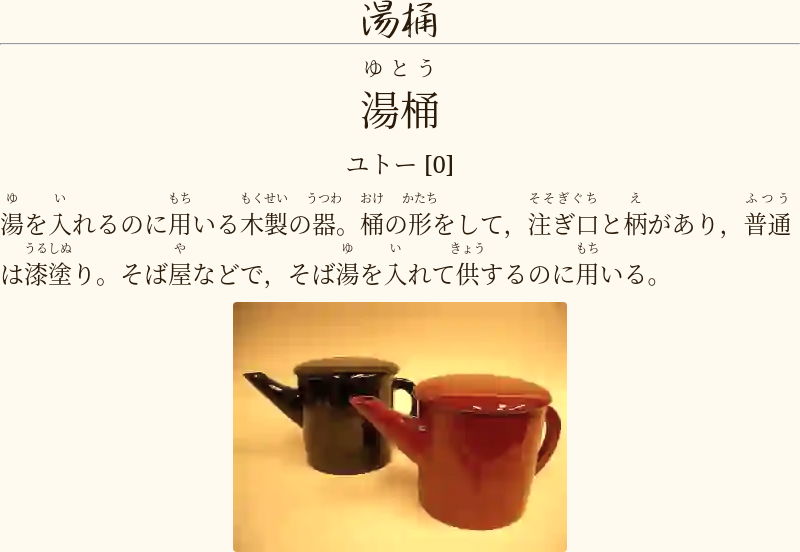

November 20, 2022 — Tatsumoto Ren
This is Tatsumoto's AJATT FAQ.
You can search questions you're interested in if you press Ctrl+f.
I'm going to update this page as I receive more questions.
If your question hasn't been answered, ask it in our chat.
Tags: faq
January 10, 2023 — Tatsumoto Ren
You learn Japanese by self-study through immersion.
Our guide contains everything you need.
Tags: faq
October 27, 2022 — Tatsumoto Ren
No one can.
You have to do it yourself.
Languages can only be acquired through massive amounts of watching, listening and reading.
Now you must be excited because you don't have to hire a teacher or go to classes.
You can do everything by yourself, at home.
Tags: faq
October 27, 2022 — Tatsumoto Ren
Immersion is the process of reading or listening to the language you're learning,
your target language.
It is not necessary to move to the country or talk to natives to immerse.
As long as you have access to content in your target language, you're covered.
The immersion content should be made by natives for natives of that language,
and it should not be translated to your native language.
Japanese learners can immerse by
watching anime, movies and j-dramas, reading books, light novels and manga.
In Japanese there is a lot of content that can be used for immersion,
and it makes Japanese very easy to learn.
In AJATT there's the concept of Japanese Immersion Environment.
Learners create an environment that simulates the process of living in Japan
by using immersion content — media in Japanese.
Japanese Immersion Environment is created by switching
from media in your native language to media in your target language.
Learners maintain their immersion environments
by doing most of the daily activities in their target language.
Read news in the target language in the morning,
listen to radio in the target language while commuting,
watch a movie in the target language after coming home,
etc.
Immersion is also commonly referred to as input.
Usually we divide immersion into passive (background) and active.
Active immersion requires full attention to the content
while passive immersion is when you're listening to the target language while doing something else.
Tags: faq
October 27, 2022 — Tatsumoto Ren
When we say input or immersion,
we mean any form of listening or reading in the target language.
When we say output,
we mean writing or speaking in the target language.
To output we first need to acquire the language through input.
Tags: faq
January 11, 2023 — Tatsumoto Ren
When you're a beginner, active immersion plays a much bigger role than passive immersion.
You need to watch something actively first and make it as comprehensible as possible
before reusing the same content for passive immersion.
At this stage it is not advised to immerse in something passively for the first time
because you haven't worked with the content and haven't comprehended it.
However, when you're already pretty good at understanding Japanese,
which happens after around a year if you're serious about pursuing the language,
you become able to understand your passive immersion really well too.
At this stage you gain a lot more from passive immersion.
When you reach this point,
you can use completely new content for passive immersion
and still understand it close to 99% if you pay enough attention.
Because of that, it makes sense to value passive immersion more past the beginner stage.
Tags: faq
October 27, 2022 — Tatsumoto Ren
Fluency is when you understand at least 98% of your immersion.
For example, a typical episode of anime contains 300-400 lines of dialogue.
If you watch the episode and encounter only 7-8 or less unknown words,
you can call yourself fluent.

Your level of comprehension depends on the domain of interest.
If you are not a mathematician, watching a lecture on mathematics
may result in a lower percentage of understanding of the material,
until you learn what you don't know.
But, if you have a near-perfect comprehension of everyday speech, anime and dramas, comic books,
then that is considered fluent.
In other words,
fluency means being comfortable living your life completely immersed in another language.
Tags: faq
October 27, 2022 — Tatsumoto Ren
AJATT stands for All Japanese All The Time.
It's a method of reaching fluency in Japanese in a relatively short period of time.
It encourages doing as much Japanese as you can every day,
immersing yourself in the language and culture of Japan
without having to go to the country, take classes or use outdated and boring textbooks.
This means that the shortest path to fluency is to make Japanese a part of your everyday life.
The AJATT method involves learning the language
mainly through a combination of reading and listening.
This could involve watching Japanese movies and TV shows,
reading Japanese books and manga.
The method states that fun and learning are a great combination,
that Japanese should not be turned into "work" or "study",
and that enjoying the process is absolutely essential.
If the process is not fun, one should stop now or figure a way to make it fun.
AJATT was created by a person named Khatzumoto in 2006.
Some aspects of the method include
Stephen Krashen's Input Hypothesis,
learning kanji through KanjiTransition,
using the SRS to help remember new words and phrases,
the focus on learning sentences instead of vocabulary and grammar.
AJATT was also influenced by Antimoon,
another input-based language learning method.
While Antimoon focuses on learning English,
AJATT mostly revolves around Japanese.
However, the principles can be adapted for learning any language
if Japanese-specific parts are replaced.
This site was heavily inspired by AJATT.
While doing AJATT I came up with new ideas no one else talked about
and made some tools that make learning languages easier.
Following Khatzumoto's retirement in 2023,
Tatsumoto took the reins as the successor of the original AJATT.
Here on this site
and within our community,
we not only teach the AJATT method,
but also continue to refine and enhance it.
The goal is to bring AJATT's insights to a larger audience,
consistently updating and improving the method as we go along.
As Katsumoto once said,
AJATT does not stand still,
it is flexible and should evolve.
Therefore, we are happy to continue his work.
To start learning with the AJATT method,
read our Table of Contents.
Tags: faq
November 23, 2022 — Tatsumoto Ren
Yes, if you want to learn English.
This is actually how I learned English as a teenager, not even joking.
I was so fed up with the quality of fansubs in my native language
that one day I just decided to switch and start watching anime with English subs.
It was insanely hard at first, and I spent hours looking up every word in a dictionary.
However, after a few months I only had to look up a couple words here and there.
If you are serious about learning Japanese, don't use English subtitles.
Watch with Japanese subtitles or without any subtitles at all.
When reading subtitles,
your own subvocalization interferes with and shadows the audio.
Therefore,
you learn the language of the subtitles, not the language of the audio.
That's why we say that watching with subtitles counts as reading immersion.
I learned English because I was reading English subtitles.
And it didn't help my Japanese at all
because I wasn't actually paying attention to the Japanese.
We've all seen countless anime fans who've watched thousands of hours of English-subbed anime
and still know less than 100 Japanese words.
Tags: faq
November 24, 2022 — Tatsumoto Ren
Remember the "watch 10,000 hours of Eng subbed anime" joke from DJT?
Well, I actually did watch anime with English subs for thousands of hours
before starting to learn Japanese.
I can't talk for everybody of course,
but my experience was that
I knew literally nothing before I sat down and started formally studying the language.
I picked up probably no more than about 50 words total,
things like お前はもう死んでいる, ただいま, 行ってきます and 馬鹿変態.
When you're watching anime with English subtitles,
you're reading the subtitles.
You're only partially listening to the audio.
So I imagine that the only advantage a person who had an experience similar to mine
would have is a little more phonetic awareness.
It would be easier to parse the sounds.
Phonetic awareness contributes to pronunciation down the line.
They would still have to build their understanding of Japanese almost from zero.
Tags: faq
February 06, 2023 — Tatsumoto Ren
You shouldn't have this problem.
Most people before they start AJATT
already have a passion for otaku content
like anime, manga, ranobe,
or other types of Japanese media.
For them learning Japanese is a means to
get more enjoyment out of the media they are fond of.
If you decided to learn Japanese out of the blue,
and you don't like any of the above,
it's going to be very hard to immerse without quitting and going back to English.
If you like anime, there will be no temptation to watch crap in English.
Anime exists only in Japanese.
Most of the stuff people like in Japanese has no alternatives in the English world.
So you can either consume translated media which is always worse,
or you can learn Japanese and experience the original to its fullest.
A lot of stuff isn't even translated, and isn't going to be.
Find something you like in Japanese.
Try to discover new stuff,
something that has no alternatives in English.
I feel like most people reading this already have an answer.
If you look at this from the opposite side, there's no difference.
Let's say you're Japanese, and you're learning English.
There is unique, interesting English content.
You just have to find it, find what you like.
When it comes to should you go cold turkey,
you can't do it until you find media you're passionate about.
When you do, I bet you're going to jump cold turkey without a second thought.
If you don't find unique and compelling content,
immersion will feel like study,
like going to classes,
and your willpower is not going to last long.
If there's English media that interest you,
it's okay if you do English once or twice a week on schedule.
If you do only Japanese,
you will be constantly craving the English media you used to consume.
There's a chance that you end up losing to the temptation,
dropping Japanese immersion
and going back to all the English content you've been abstaining from.
It will be worse than occasional breaks.
Tags: faq
December 22, 2022 — Tatsumoto Ren
Watching with subs is a reading activity.
If you have subtitles on all the time,
you have less,
maybe even no time to practice listening to the target language.
If you're not fluent yet,
and you practice reading more than listening,
your listening ability starts lagging behind your reading ability.
On the other hand,
having target language subtitles on is going to help you learn a lot more quickly.
If developing good accent and listening ability is important for you,
always watch raw and turn the subs on only when you hear an unknown word.
If getting a native-like accent is a priority,
you should also cut down on any reading practice and learn entirely through listening.
If you're not that concerned about it,
you could keep two types of TV shows,
one for watching raw and one for watching with subs
so that you still have some dedicated time to learn through listening.
And if you don't care about accent at all,
maybe if you're learning your TL only to be able to read TL books or watch TV shows with subs,
then it's okay to have them on all the time.
The amount of passive immersion you're doing also plays a role.
You can allow yourself to watch more content with subs
if you listen a lot in the background.
If your listening ability is underdeveloped by the time you reach fluency,
catching up will take more effort than if you listen a lot from the beginning.
But the process is pretty intuitive,
to develop your listening ability all you have to do is
listen a lot over a period of time.
In my experience neglecting listening as a beginner can be crippling for your speaking.
Before I started learning English through immersion,
I had spent several years not listening to any native English content
and being forced to prematurely output at school.
I was able to improve my listening relatively quickly after starting to immerse.
Today I can understand everything I hear in English, maybe except some strong accents.
However, when I speak, I don't know how to pronounce words correctly,
and often I'm lost trying to recall or guess the right pronunciation.
I don't have the same experience in Japanese
because I took a listening-heavy approach from the start.
Lastly,
I notice that it's hard to let go of TL subtitles if you already have them downloaded.
A solution is to decide what shows you watch raw and what shows you watch with subs.
If you watch something raw, don't download subtitles at all.
I also recommend watching ongoings.
When you watch an ongoing anime, you download a new episode every week.
Because the episode is still new, there are no subtitles for it yet.
Your only option is to watch raw.
Tags: faq
February 13, 2023 — Tatsumoto Ren
If you never pause, it means you don't look up words at all.
The more you look up, the faster you progress.
If you have to look up a word in every sentence, it quickly becomes tedious.
So your task is to
try to find the balance between enjoyment and frequent lookups.
You can watch raw and try to understand only through the visuals,
watch with subs and actively look up unknown words,
or do something in between.
When it comes to doing something in between,
it boils down to
looking things up only once every couple minutes.
In practice, however, I find that most people can't do it.
It's a lot of work to sit with a timer
or somehow arbitrary track time and decide when to look up and when not to look up.
So I recommend splitting your time between media where you look up everything
and media where you don't look up anything.
One of our community members, ﾌｪﾘﾍﾟ, shares the following routine:
I always keep two TV-shows.
One for mining everything
and the other one for pure enjoyment, without lookups.
I agree with this.
I never look up when I'm watching raw,
and always look up when I'm watching with subtitles.
When reading, I always look up unless I can easily infer the meaning from the context.
But be careful when skipping lookups when reading
because you might run across a word written in kanji
and assume that it is read one way when it is actually read differently.
This is not a problem when reading alongside an audiobook though.
If you find yourself looking up too many unknown bits too often,
switching to easier content is a solution too.
You can go back to the difficult medium once you increase your skill level.
Tags: faq
December 05, 2022 — Tatsumoto Ren
Of course.
Khatz himself admitted that he was rarely able to do so much, but he always tried.
We all have different amounts of time available for studying our target language.
Immersing 18 hours a day is not always possible.
I think trying to get to the goal every day is the most important thing though.
If you do 12 hours, or 8 hours, or 6 hours, that's not a crime.
Just try to do better the next day.
Tags: faq
October 27, 2022 — Tatsumoto Ren
Slice of life shows.
You can divide the language into domains of interest.
The easiest domains are shows for children, slice of life and romance anime.
Since in TV shows for kids there's often very little dialogue,
and the speech is too simplified,
most people skip them and choose slice of life and romance anime.
Then they slowly advance by selecting other anime genres
until they can consume a wide variety of input and understand it perfectly.
To find easy anime you can search MAL.
Make sure there are as few genres as possible
and exclude other genres to prevent difficult anime from appearing in the results.
Here's an example search.
Tags: faq
January 09, 2023 — Tatsumoto Ren
Usually spaces aren't used in Japanese.
You understand word boundaries just by reading.
The alternation between kana and kanji makes it visually easier to tell words apart.
Tags: faq
December 05, 2022 — Tatsumoto Ren
Back in my day RRTK didn't exist.
The
JP1K method
didn't exist either.
I did KanjiDamage+.
If I were to start today, I would probably start learning words right away.
If I couldn't handle it, I would pause and try the JP1K method.
Tags: faq
December 18, 2022 — Tatsumoto Ren
Unless you did RTK or Kanjidamage before you started reading,
creating mnemonics is not going to be that easy
because you never learned components of kanji
and lack a more in-depth understanding of how kanji are formed.
You also haven't practiced creating mnemonics for Japanese before.
In this case I would recommend not worrying about mnemonics
and trying to memorize readings without them.
For example, in Kanjidamage
mnemonics for readings are pegged to their system of naming kanji parts.
Without learning the system you can't understand the mnemonics and make similar ones yourself.
Of course, you can create your own system,
but it also has to be based on some clues, triggers.
When you see a kanji, you recall its reading through that.
If you did Kanjidamage or Kanjidamage+,
you already know ~2 thousand premade mnemonics for kanji readings,
and they're going to help you a lot.
For me this was pretty much the case.
However, the benefits don't last long.
Kanjidamage's mnemonics helped me out at first,
but I quickly moved past them as I continued to learn new words.
And the more words I learned,
the easier it was to learn more words.
I eventually forgot all the mnemonics I used to know.
Because the benefits are going to be short-lived,
I don't see a strong reason to recommend mnemonics.
The better you get at Japanese, the less you are going to need to rely on them.
I think that instead of creating a system of mnemonics
it's better to spend that time on learning a few thousand Japanese words
even if at first it's harder.
If you choose to use mnemonics, don't rely on them for too long.
You don't want to be an advanced learner
who still thinks of mnemonic stories when trying to read every word.
To recall something through a mnemonic you have to take an extra step.
First you have to recall the mnemonic and then the thing itself.
Reading Japanese should be automatic, like reading in your native language.
Tags: faq
December 23, 2022 — Tatsumoto Ren
Decks like RTK, RRTK, KanjiDamage and KanjiTransition
are designed to give you training wheels
so that you could practice kanji in a modified environment for a while
and then transition to reading real Japanese and learn real words.
The goal is to achieve kanji fluency,
an ability to recognize kanji the same way you recognize people's faces.
If you can look at a kanji and reliably tell if you have seen it before or not,
then you have it.
It doesn't matter if you don't remember its name.
If you have completed one such deck, you don't need to do another one of the same kind.
What you have to do from this point
is to learn to associate words written in kanji with how to read them and what they mean.
Move to the next level and do Ankidrone Starter Pack.
Eventually your goal is to start sentence mining while consuming native content.
Even if you feel like you lack kanji ability,
just continuing to learn words is going to improve it.
Remember, many people never learned kanji through a dedicated deck,
they learned words right from the start.
Tags: faq
December 26, 2022 — Tatsumoto Ren
If you've been learning words using sentence cards or TSCs,
and you have developed context-dependent memories of the words,
that is not abnormal.
It happens to many people.
It goes away naturally over time as you continue reading with a dictionary
and get more comfortable with kanji.
Beginners are more likely to form context-dependent memories.
Word Cards
may work better for them in particular, at the cost of slightly increased difficulty of reviews.
But if you want to stick to TSCs and don't want to experiment with card templates,
all you need to do to correct a context-dependent memory
is look the target word up a couple of times when reading in the wild.
Then your brain should draw the necessary connection, and it will stick.
Tags: faq
October 27, 2022 — Tatsumoto Ren
TL,DR: Instead of Wanikani do this.
WaniKani is inspired by Remembering the Kanji.
Similarly to RTK,
in WaniKani kanji are presented in an efficient order,
and mnemonics are employed to aid memorization.
The pros end here. Let's list the cons.
The mnemonics are pre-made.
WaniKani doesn't let you write your own stories.
Other systems like KanjiDamage use prebuilt mnemonics as well,
but while you're going through a KanjiDamage deck,
you can change them to your own personal, vivid mnemonics
if the ones given to you are not sticking or you simply don't like the stories.
RTK encourages you to create your own mnemonics.
Personal mnemonic visualizations tend to improve learning and recall
compared to premade ones.
It forces you to use it's personal built-in SRS.
The fact that you can't use Anki with WaniKani is a huge downside.
Note that on the Internet you can find third-party Anki decks ripped from WaniKani.
If you want to try WaniKani, download them instead of using the site and paying for it.
They should be easy to found on AnkiWeb or other places.
It's a paid service. It costs money.
It also means that if you want to keep reviewing
so that you don't forget what you've already learned
then you have to keep paying
which is pretty lame.
Learning Japanese from the zero to fluency without spending any money
is the main idea that stands at the core of our method and this site.
I cannot approve of things that contradict it.
It makes you learn isolated kanji readings and vocab out of context.
Learning a bunch of similar information at the same time out of
context is a recipe for memory interference.
WaniKani users end up being unable to read kanji with multiple readings.
On top of that,
this sort of knowledge is impractical because in Japanese kanji are always used to write words.
You either know in advance how to read an entire word
or you can never guess with 100% certainty based on readings learned out of context.
If you decide to learn kanji out of context,
it is more efficient to create a mental dictionary entry for each character
by only learning its meaning
so that extensive knowledge of readings and meanings
can then be easily gained intuitively through context.
WaniKani's built-in SRS never has you write out kanji from memory,
it only has you recall the meaning given the kanji.
Anki lets you easily create
production cards to train writing out kanji
if you wish to do so.
You are forced to go through WaniKani at a snail's pace.
Apparently if you learn as fast as the WaniKani system lets you
it will take you around 18 months to get through the most common 2,000 kanji.
On the other hand,
it takes less than 3 months to get through KanjiDamage or Remembering The Kanji.
Isolated kanji study is outdated.
Today there's the JP1K method
which is built around the idea of learning Japanese words from the beginning.
When studying kanji out of context
you have to learn English keywords,
and that's never going to be as efficient as learning words.
Tags: faq
January 22, 2023 — Tatsumoto Ren
Just go to the next step.
Do the N5 and N4 levels of Ankidrone Starter Pack,
then jump into sentence mining.
JP1K is made for beginners, for people who don't know any Japanese yet.
Before you start sentence mining, you need to reach the point of
kanji fluency.
If you have learned more than 1,000 kanji,
then it is highly likely that you already have kanji fluency.
There's no need to continue studying kanji in isolation or with a JP1K deck.
You just need to start sentence mining.
The kanji you don't know yet can be learned through learning whole words.
Tags: faq
December 11, 2022 — Tatsumoto Ren
I'm guessing that's a joke.
JAV has extremely poor language density.
If you watch JAV, skip all the parts where no one's talking.
If you like erotic content, I recommend reading doujinshi,
maybe something from Nhentai or a similar site.
In them you see lots of dialogues
They're better for immersion.
Tags: faq
December 01, 2022 — Tatsumoto Ren
I have a few points regarding this.
- Any dubbed content is stripped of basically all cultural interaction, it's just pure language.
You're going to miss out on all the body language, gestures, concepts unique to the country.
In dubs actors say things that native speakers would rarely say
if it was just a regular movie in your target language.
- In dubbed content you learn about foreign countries where people don't speak your target language.
You're investing your time in irrelevant cultures
when you could be learning more about your target language's culture.
- It's pretty hard to find dubbed content
compared to native content in case of Japanese.
There are sites with dubbed American movies,
but their libraries are rather small.
- Japanese has an abundance of native content.
There's absolutely no need to substitute it with dubbed content.
I imagine it's not a problem for other languages either,
unless we're talking about languages that are spoken in poor countries
that can't make a lot of their own content.
For example, I was surprised how many television dramas exist in Russian,
probably even more than in Japanese,
and they make new ones every month.
Taking all this into account,
dubbed content is not as good as native content.
I advise you limit how much you use it in your immersion.
But keep in mind that real Japanese people watch dubs.
They know about the most popular American movies, for example.
It can be fun.
Tags: faq
January 21, 2023 — Tatsumoto Ren
See popup dictionaries.
I have a guide on how to set up Rikaitan here.
Don't forget to install AnkiConnect
if you want to make Anki cards.
Tags: faq
January 21, 2023 — Tatsumoto Ren
Using OCR software (Tesseract, Transformers) with a dictionary.
The
Mining from manga
article explains how to automate it.
If your OCR tool fails,
open Google Translate, enable handwriting and draw the word.
Another option is to find kanji by their parts on Jisho.
Tags: faq
December 05, 2022 — Tatsumoto Ren
SuperMemo is proprietary software, so it should not be used.
Mnemosyne is an alternative SRS that also respects your freedom.
Tags: faq
October 27, 2022 — Tatsumoto Ren
As long as you finish your daily reviews, any time is fine.
Some people do Anki first thing in the morning,
some spread their reviews throughout the day.
The worst option would be to do Anki in the evening when you're tired.
I personally try to do Anki in the morning.
By dedicating myself fully to finishing my daily reps in one continuous chunk of time,
I can finish them faster.
To have as little distractions as possible,
I usually use a dedicated device (a laptop) with only Anki installed/running.
Tags: faq
December 03, 2022 — Tatsumoto Ren
There are more people out there who hate Anki than those who like it.
I somewhat dislike Anki too.
So you're definitely not alone.
Since around 2020 Anki has undergone significant changes that outraged the users.
Many existing add-ons break with each new release.
Maybe Anki needs to be completely replaced by another SRS.
I still use Anki because the benefits outweigh the costs.
The way I think about it is that some amount of Anki is better than no Anki at all,
provided you do daily immersion.
Without mass immersion Anki is not very effective.
When using Anki as a supplement to immersion,
it helps you learn more efficiently than you would be doing otherwise.
If you power through and do just 20 reviews a day,
that's 20 words that you won't forget for quite some time.
If you hate Anki because you dread your reviews, you should just change the settings.
It is very easy to make Anki unusable by applying the wrong settings.
Try to find something that works for you.
On this site you can find my recommended settings.
Some tips on Anki settings:
- Reduce the penalty for failing cards.
By default, if you fail a card, its interval gets reset after you relearn it.
If you set New Interval to 50% instead,
failing a card won't be that big of a deal.
- Change Starting ease
and Interval modifier
in order to fix Ease factors and prevent them from reducing after a lapse.
- Don't do too many new cards a day.
Often people learn a gorillion cards a day,
get overwhelmed by the reviews,
burn out and start hating Anki.
The bare minimum amount of time you need to spend SRSing is highly individual.
Usually we calculate it as 1/3 of total study time but no more than 1 hour a day.
As long as you can finish your daily reviews,
learn new cards and add several new cards from your immersion,
you should be fine.
Tags: faq
October 27, 2022 — Tatsumoto Ren
This page
has all the recommended Anki settings laid out for you.
Tags: faq
December 05, 2022 — Tatsumoto Ren
You can list them in the Anki Browser.
For example,
to see cards that have lapsed more than 5 times
open the Anki Browser (shortcut: b) and type prop:lapses>5.
Likewise, prop:lapses>10 will show cards that have lapsed more than 10 times, etc.
I recommend resetting leeches.
The extra time required to drill them in is not worth it.
After resetting
edit the corresponding notes to make them simpler and avoid lapses in the future.
For example, change the example sentence.
Afterwards relearn the updated cards.
Tags: faq
October 27, 2022 — Tatsumoto Ren
A 1T (one-target) sentence is a sentence
that contains only one word or grammar structure that you don't know.
For a more detailed explanation see
this article.
Tags: faq
October 27, 2022 — Tatsumoto Ren
When people say "animecards" or "high quality vocabulary cards", they mean
WCCs.
WCCs contain the same information as TSCs,
but the information is ordered differently.
There's only the target word on the front,
other fields are shown on the back.
WCCs have context — an example sentence, and it's shown on the back as well.
The difference between WCCs and SWCs
is that you have context which is shown on the back of a card.
WCCs are designed with the intention of mining from anime and similar audio-visual sources.
Often a WCC will contain a screenshot from the scene
and an audio file with the example sentence said by a voice actor.
SWCs and WCCs essentially test the user on the same information
— a single word out of context.
The extra info on the back of a WCC is only used for reference
to explain usage of the word
and is added so that when learning the card the user could form more vivid memories.
Although this type of of cards might be preferable for certain people,
my personal opinion is that TSCs are better than WCCs.
I don't use WCCs in my studies.
- WCCs are harder than TSCs due to the lack of visible context.
They place more mental burden on the user.
- WCCs can't fully protect from context-dependent memories,
but it's fair to argue that the memories that you create are less likely to be context-dependent.
- Use-cases of WCCs overlap with SWCs, and making a SWC is often faster.
- There's maybe a slight benefit in time spent repping compared to TSCs,
but they're pretty close.
- A lot of times when WCC users rely on a hint field, TSC users don't need any modifications.
- WCCs violate the practice how you play principle
since most words in immersion do have context.
When using the SRS ideally we want to replicate real life situations.
Tags: faq
December 05, 2022 — Tatsumoto Ren
When you spot a pair of words that are written identically but read differently,
make TSCs with those words and use furigana with × on the front
to distinguish between the readings.
For example, you can read 昨日 either きのう or さくじつ.
Make a card where on the front you have 昨日[×きのう] and 昨日[さくじつ] on the back
if you want to train recalling one reading but not the other.
I have given examples here.
This trick works for words that share the same meaning
and for words that have different meanings.
Alternatively,
if two words are written the same way,
pronounced differently and also mean two different things,
when you make a card,
you can pick a specific example sentence that will hint at the right reading.
The last option would be to make a normal card and simply recall both readings at the same time.
Recalling two things at once is harder,
and this will only work for pairs where the meaning is shared but pronunciations differ.
Tags: faq
December 23, 2022 — Tatsumoto Ren
The most popular community guideline is 1 hour a day.
You can't directly control how much time you're going to spend on Anki.
The amount of time is determined by what card type (template) you use,
how many new cards you add each day,
your retention ratio,
and how fast you can read Japanese.
If you notice that you overspend you time on Anki,
try TSCs instead of normal sentence cards,
reduce the number of new cards you learn per day,
install Speed Focus Mode Anki add-on.
Also read: How should I divide my study time?
Tags: faq
October 27, 2022 — Tatsumoto Ren
- Trying to understand as much as you can.
- Using a dictionary when you don't understand.
Active immersion is all about making your input comprehensible.
The main way that we make input comprehensible is through dictionary lookups.
Aside from that you can pay attention to
scenery, intonation, pitch accent, levels of politeness and other cultural things.
When you're a beginner,
you will often unable to keep up with the plot.
Try to pick up as many words and phrases as possible,
little chunks that you understand.
When you're intermediate,
following the plot becomes an option.
Shift towards getting the gist of what's being said.
Fill the gaps by learning the unknown bits.
When you're advanced,
you've already beat the game and understand almost everything.
At this point you can shift your attention to things that help you output.
For example,
what exact phrases people say in what situations,
how they talk,
what gestures or body language they use,
Japanese pitch accent.
Tags: faq
October 27, 2022 — Tatsumoto Ren
Depends.
The minimum to maintain fluency is highly individual,
it depends on your current level.
To maintain fluency, continue immersing as frequently as you can.
The longer you have studied Japanese,
the longer you can maintain your ability without much immersion.
If you've studied your target language for many years, you can even last multiple months.
The two easiest things you should to to maintain your ability are
keeping up with your SRS reps and immersing passively.
The SRS doesn't take up much time.
In maintenance mode you're not adding any new cards
so the number of due cards each day will be getting lower.
Passive immersion is practically free,
it doesn't take any extra time at all.
Then you should do at least some active immersion,
and the exact amount of time is going to depend on how long you've been studying your TL
prior to going into maintenance mode.
I would say at least an hour a day is necessary.
Tags: faq
December 23, 2022 — Tatsumoto Ren
Roughly in three parts.
- Spend 1/3 of your time reading, 1/3 listening and 1/3 doing Anki.
- Don't spend more than 1 hour a day on Anki, distribute the rest.
- Watching TV with subtitles counts towards reading.
- Here passive immersion doesn't count as "studying".
So, on a bad day when you have only 3 hours of study time,
you do each activity for 1 hour.
On a good day when you have, let's say, 12 hours a day,
you spend 1 hour on Anki,
5.5 hours on listening and 5.5 hours on reading.
We know that due to subvocalizing
too much reading causes harm in long term.
Depending on your goals,
when allocating your study time,
you could increase the time spent listening (and watching raw)
at the expense of reading time.
Without immersion, Anki helps very little.
Trading immersion time for more Anki is definitely not a good idea.
Related: How much time should I spend SRSing?
Tags: faq
January 11, 2023 — Tatsumoto Ren
Yes and no.
If you use Anki,
it has to take some time from the total amount of time available to you.
Anki occupies a part of your study time.
Whether to call Anki immersion is really a philosophical question.
In a way it is because in Anki you read sentences created by native speakers
that you saved previously.
But since Anki is used for repetition and doesn't provide you with new content,
it's not a source of immersion.
That's why I personally wouldn't call it immersion.
When someone asks you how many hours a day you immerse,
usually you are expected to separate Anki from other activities.
State both numbers, how much you spend in Anki and how much you do other stuff.
Depending on your answers people will give you different advice.
Tags: faq
December 27, 2022 — Tatsumoto Ren
I recommend learning 10 to 30 new cards a day.
The more new cards you do, the more reviews you'll have complete.
See New cards.
Tags: faq
November 28, 2022 — Tatsumoto Ren
I don't necessarily recommend it.
See Reading sentences aloud.
Tags: faq
January 29, 2023 — Tatsumoto Ren
The process of making monolingual TSCs
for grammar and vocab is the same
because there's no significant difference between the two.
When you're reading books,
watching things with subtitles,
browsing the web,
you're going to find sentences where
you know everything in a sentence
but one grammar point or one word.
Take that whole sentence,
put it on the front of your SRS card.
On the back you're going to put the monolingual definition
for the grammar point or word you didn't know.
- Download and install monolingual
dictionaries
for GoldenDict, Rikaitan, etc.
- Keep JMdict enabled (but hidden)
for times when your monolingual dictionaries don't pick up certain words.
Monolingual dictionaries tend to be smaller than JMdict.
- Mine sentences as usual, don't add English definitions to your cards.
Having both English and Japanese definitions is acceptable only during the transition period.
You will run into grammar points
that only have English definitions.
Rely on Rikaitan to pin-point the grammar pattern, then use
Weblio,
sakura-paris
or any search engine to look it up.
Searching the web should lead to explanations in Japanese.
Also try monolingual dictionaries for grammar.
They cover additional topics and can help when other dictionaries fail.
Some people would prefer to install as many monolingual dictionaries as possible
to cover even more ground and minimize the need to look up words online.
Tags: faq
December 26, 2022 — Tatsumoto Ren
TSCs
are very flexible in how you can review them.
When you learn a card for the first time,
read the full sentence and understand its meaning as a whole,
as well as meanings of individual words in isolation.
When you review the card later,
you can choose to skip the sentence
and instead only read the target word.
Read the word,
then reveal the back of the card and read the definition.
If the word is written in kanji,
pass the card if you understand the meaning and reading of the target word.
If the word is not written in kanji,
pass the card if you understand the meaning.
A definition is just one of many possible ways to describe the meaning.
Don't recall the definition in case of a monolingual card,
or the translation in case of a bilingual card verbatim.
Your goal is not to memorize a definition, it's to memorize the meaning of a word.
Having a general idea of the meaning in your head is enough.
If the word has more than one meaning,
don't recall all of them.
Focus on the context of the TSC in question
to determine what particular definition you are tested on.
Tags: faq
January 17, 2023 — Tatsumoto Ren
A word card has just one word on the front.
It's different from a sentence card which has a sentence on the front.
If the word you're testing yourself on is a concrete noun, recall how it looks or what it is.
Usually concrete nouns represent objects that you can see, like
鼯鼠
or 翡翠.
Your task is to recall how to read the word and kind of imagine how it looks like.
If the word is not written in kanji, then just recall how it looks.
It's a good idea to have a picture of it on the back of the card to test yourself.
Because this is a monolingual card,
you are supposed to have a monolingual definition on the back of the card.
The definition is there for you to understand what the word means.
As I've said many times, don't recall the whole definition verbatim.
That's way too much work, takes too long and uses too much brain power.
Your goal isn't to memorize the definition, it's to memorize the meaning of the word.
The definition is just one way of writing that meaning.
If the word is not a concrete noun,
you're better off making a TSC instead.
Tags: faq
December 05, 2022 — Tatsumoto Ren
Mecab.
I bet Jisho uses Mecab behind the scenes too.
Tags: faq
December 01, 2022 — Tatsumoto Ren
Yes.
When you make a card, convert the target word into kanji.
Khatzumoto did it all the time, and it's practically a common thing among ajatters.
I do it as well.
Examples:
If you can read the kanji, then you can automatically read the kana.
But the reverse is not necessarily true.
If you can read the kana, it doesn't mean that you can read the kanji.
By learning the kanji version you're getting both at the same time.
Some might argue that learning kanjified words is more difficult,
but I don't see it as a big problem.
Memorizing kanji readings can be difficult in the beginning,
but it becomes easier with practice.
Moreover,
learning kanjified words helps create stronger memories.
If you already have a
targeted sentence card
that teaches the kanji version of a word,
then the next time you make a card that has that word in it,
you don't have to change it to kanji because it's not the target word anymore.
However,
if the word is written in kanji in the original text,
do not convert it to kana.
Most words in Ankidrone Starter Pack
are kanjified for this reason.
Tags: faq
January 25, 2023 — Tatsumoto Ren
The most straightforward and easiest approach
is to mine the exact spelling that you saw in your immersion.
And it should work in most cases.
An exception would be when you see a word written in kana but want to add it to the SRS
in kanji.
A less efficient but more mistake-proof approach would be to mine all spellings
that appear in a dictionary.
But since making several targeted sentence cards for one word is more work,
I would make a
TSC
for one spelling and
SWCs
for all other spellings.
A more optimized approach is to put each spelling in a search engine.
Mine the one that brings more results.
Usually search engines tell you how many results have been found for each search term.
When searching, restrict the language to Japanese,
or there will be Chinese sites in the results,
and the number of occurrences of a word will be incorrect.
rankspellings
is a script from my dotfiles that searches words on Google or Yahoo
and prints the number of search results for each.
You can use it to find the most common spelling of a word.
For example:
> rankspellings -g 川蝉 翡翠 魚狗
翡翠 19300000
川蝉 487000
魚狗 6130
翡翠 appears to be the most useful spelling among others.
Tags: faq
January 27, 2023 — Tatsumoto Ren
Reading Japanese names is more tricky than reading regular words
because in addition to
音読み
and
訓読み
readings,
in Japanese names
名乗り
readings are also used.
So if you have never practiced reading names, often you may be lost.
Even Japanese people oftentimes are not able to know with certainty
how a name is going to be read like.
In addition,
it's not uncommon for a name to be read many ways.
For example, you can read 幸子 as ゆきこ, さちこ or こうこ;
裕子 as ゆうこ or ひろこ;
晶子 as あきこ or しょうこ.
With regular words this doesn't happen so often.
Words like
経緯 which is read けいい／いきさつ
or 故郷 which is read こきょう／ふるさと
are rather exceptions.
So how do you learn names?
Practice in Anki, of course.
Make an Anki deck and fill it with Japanese names.
The deck could include names of celebrities, politicians or even anime characters.
Most anime characters have normal Japanese names unless it's a weird fantasy show.
On the front of the card you'd have the name itself written in kanji.
On the back put the name with furigana.
A photo and some basic information about the person would be nice to have on the back as well.
Don't make cards for random people,
instead add names of people you've seen or heard of a few times before.
This is going to ensure that the names are somewhat frequent.
Also, don't make cards for just a name or just a surname.
Any given name or surname can have a number of different readings.
Only a concrete person can have their name read only one way.
For example, the name 福沢諭吉 identifies a real person and has only one correct reading.
Through learning lots of names
you're feeding your brain input,
creating a bank of names,
training a neural network in your brain.
You start seeing patterns.
So next time you see a new name,
you can take a more correct guess.
Tags: faq
November 23, 2022 — Tatsumoto Ren
Words commonly written in katakana,
including 和製英語 and 外来語,
are annoying because you have to read katakana.
Due to the shapes of the characters,
reading katakana is more difficult,
especially long katakana-words.
Even Japanese people hate reading such words.
With training, you can get used to reading any alphabet,
but it's inevitable that a badly designed alphabet takes longer to adapt to.
Maybe one day Japan will switch to the Cyrillic script.
Until then, we have to deal with what we have.
Tags: faq
November 23, 2022 — Tatsumoto Ren
Please read this excellent article by Richard Stallman:
Reasons not to use Netflix.
There are plenty of ways to
obtain
immersion material
and keep your freedom.
Tags: faq
January 09, 2023 — Tatsumoto Ren
Start watching movies, TV shows and anime with Japanese subtitles.
Read the subtitles and try to understand them.
Reading alongside audio is easy compared to raw reading practice,
so that's a good way to start, and that's how I started too.
The audio should guide you as you read.
Then try manga and eventually novels.
Use a popup dictionary (like Rikaitan) to look up unknown words.
Tags: faq
October 27, 2022 — Tatsumoto Ren
Reading is very powerful, but it harms you
if you don't have enough phonetic awareness.
If I were starting today, I would keep reading at a minimum for the first year.
In this guide we try to balance listening and reading
to accelerate progress
without sacrificing listening abilities too much.
It is recommended to avoid reading for the first year
in order to allow listening abilities to mature.
Therefore, active immersion mainly consists of watching anime, dramas, movies, etc.
Afterwards audio tracks are extracted from the video files
and reused for passive immersion.
A limited amount of reading is necessary to grow one's vocabulary.
Target language subtitles are used to look up unknown words,
but are best kept disabled, hidden for the most part of the playback.
Text-based flashcards are used to aid in memorization
since audio-based flashcards don't work very well.
By listening to the language as much as possible, preferably all the time,
the adverse effects of premature reading are minimized.
What's more,
by reading subtitles and reviewing text-based flashcards in the SRS
one can learn kanji
and prime themselves for reading real texts later on.
In Japanese literacy is impossible without knowing kanji,
and we have to address that.
Tags: faq
October 27, 2022 — Tatsumoto Ren
Reading leads to sub-vocalizing
which forms bad pronunciation habits
and negatively influences the way you perceive spoken language.
In the beginning I recommend putting more time into listening than reading.
Passive listening also adds up to the total hours.
If the text is voiced,
such as anime with subtitles,
it counts towards reading practice
unless you don't read along.
Reading may be a challenge at first,
but getting good at reading is not that hard,
and it's never late to start reading.
Getting perfect at listening and speaking is much harder.
If your reading gets too good
and your listening lags too far behind,
your brain will start to become too reading-dominant,
and this is very hard to reverse later.
It cripples you almost permanently.
Tags: faq
December 28, 2022 — Tatsumoto Ren
I find that for people who want to have a native accent
ideally it should be as late as possible.
Depending on when you start reading,
you trade faster progress and literacy for better pronunciation.
If you want to have a good accent,
I recommend getting into reading novels after about a year.
Waiting longer is likely to give diminishing returns,
but go for it if you don't like reading,
or if you strive for perfect pronunciation.
Some people don't really care about their pronunciation
in which case they might focus on reading right from the beginning.
Of course reading novels will be difficult for beginners
unless they immerse a lot before they become readers.
And of course you can improve your pronunciation later.
To do that you'll have to go through a period where
you focus on listening instead of reading,
deliberately practice your pronunciation by doing shadowing excercies,
etc.
Tags: faq
January 16, 2023 — Tatsumoto Ren
You either start practicing reading from the beginning
or put off reading until some point in the future.
If you just want to understand your target language,
be able to read books effortlessly,
but you don't care about speaking and don't want to talk to natives,
then reading early is a good idea.
As an adult,
learning foreign languages by reading is considerably easier
than learning by listening to spoken language.
You can improve much more quickly.
The downside to reading early on
is that you're going to make a lot of bad phonetic habits.
Reading biases how you hear the language.
If you haven't acquired a solid intuitive understanding of the phonetics of the language,
the way it will sound in your head when reading will be incorrect, foreign.
Undoing those habits later is harder than avoiding them in the beginning
and requires thousands of hours of listening.
It's more difficult and takes longer to learn through listening alone.
You have to rely on nothing but sound in order to understand what's going on.
But listening practice is what gives you very strong listening abilities.
The quality of your pronunciation
is also largely determined by your ability to perceive the sounds and hear small differences.
If you want to have good listening abilities and a good accent,
I recommend only audio-visual input (TV shows, movies, anime, dramas) in the beginning.
It's hard to completely avoid reading
because you still want to make Anki cards and use dictionaries,
but at least if you don't read any more than that,
you won't make as many bad phonetic habits.
So in any case I think the most optimal path is to learn to read from the beginning,
but to avoid active reading practice outside reviewing text-based flashcards.
You want to be listening all the time,
learning to understand the spoken language.
Do it for the first year.
That should give you a strong foundation in the phonetics of the language.
Then you can start adding light reading to your studies.
It could be some really easy comic books, manga.
Afterwards start reading harder content, like novels.
Even if you don't want to put off reading,
there is no reason to neglect listening.
Listening is cheap.
You can listen while doing something else,
in the background.
Tags: faq
October 27, 2022 — Tatsumoto Ren
Yotsubato is often recommended as a "beginner manga".
Even though Yotsubato is quite simple compared to many other mangas,
it contains lots of colloquial speech, slang, slurred speech, sentence endings and grammar
that drive beginners crazy.
Vocabulary in the manga is no doubt very simple,
and there aren't that many words,
but it's not the vocabulary that trips people up.
I have seen countless questions like, "What does this line in Yotsubato mean?"
When reading the manga,
people get so confused,
they can't find unknown phrases anywhere in a grammar book or in a dictionary,
so the only thing left for them is to beg other learners for explanations on a forum.
That's not what a beginner material should do to you.
Second,
Itazuraneko recommends that you read Yotsubato very early on,
before you have had a chance to get used to the sounds of Japanese.
There's no audio, you don't know how Japanese people pronounce what you're reading.
Reading anything without accompanying audio
at this stage is a recipe for failure
and is going to negatively affect your listening ability.
As a result you're wasting hours trying to read a single page,
and you're reading with a thick foreign accent in your head.
From day one listen a lot, listen all the time.
Immerse both passively and actively in voiced Japanese media to train your ears.
Complete the first two subdecks from Ankidrone Starter Pack,
they contain natural, correct, easy to understand sentences with clear native audio.
Before starting reading manga,
watch lots of anime with Japanese subtitles.
Reading along audio is easier and should serve as training wheels
to prepare you for reading without audio.
The general rule of thumb is to
improve your comprehension using anime before moving to manga.
After you've done that,
you can go back and read Yotsubato if you want.
Although I personally would choose some other manga,
I don't find Yotsubato particularly interesting.
You also need to
set up OCR
to make it easy to select text and look up unknown words in manga.
Tags: faq
January 23, 2023 — Tatsumoto Ren
Both are undoubtedly dangerous, but why are you worrying about this?
If you're aware that reading dominates your immersion, cut it out and listen more.
Immerse the right way, and everything will be fine.
People who start outputting early
end up speaking with grammar mistakes and a foreign accent.
Bad grammar comes from trying to form sentences
without having acquired an intuitive knowledge of sentence structures.
Bad pronunciation comes from trying to pronounce new and unfamiliar sounds
without having heard them enough times.
Most grammar and phonetics can only be acquired through immersion.
Practice speaking incorrectly, and you'll develop muscle memory
that will stand in your way of mastering a foreign language.
People who delayed outputting until after they have learned their target language,
but didn't listen enough and learned mainly through reading,
end up having decent grammar but still have a foreign accent.
Here bad pronunciation comes from the phenomenon known as subvocalization.
The act of reading activates muscles in the throat.
Hence, in this scenario the learner also develops bad speaking habits.
This makes early output more harmful.
Tags: faq
February 13, 2023 — Tatsumoto Ren
Khatzumoto recommended skimming mostly as a motivational tool.
You skim boring parts to get to the fun parts, and it keeps you focused on your immersion.
When it comes to reading speed, skimming won't help.
If you read a lot, your reading speed will improve naturally.
To increase your reading speed
you need to read at your natural speed, and read a lot.
Slowly over time your natural reading speed will get better.
The more you read, the more your brain will be able to recognize patterns and
group words together. For example, when you first start learning Japanese, you
may need to read each character individually to understand long patterns
such as ○○ざるを得ない, ○○もさることながら or どちらかと言うと.
But as you become more familiar with the language,
you will be able to recognize longer patterns instantly,
without having to say each syllable in your head.
Your brain will become able to process multiple characters and multiple words as single units.
With practice,
you start to chunk the language into larger and larger pieces.
As you become more accustomed to picking up groups of words as single units,
your reading speed increases due to the decreased number of chunks you have to process.
So the key to being able to read faster naturally
is building the mental infrastructure in your brain.
Forcing yourself to read faster than you are comfortable will not lead to the desired result.
Speed is only achievable through dedicated practice and time.
I don't recommend skimming, as it can lead to missing important information.
It is much more beneficial to be able to actually read and recognize each piece of the text,
rather than just jumping through words,
skipping chunks
and inferring the meaning from the context.
While it can be possible to comprehend and infer the meaning of Japanese text without certain parts,
such as conjugations and particles,
the lack of exposure to essential words and grammar
may impede one's ability to use them when speaking.
For language acquisition
it is important that you pay attention to each bit of information in the text
so that your brain can absorb the patterns and acquire grammar.
Avoid skimming in order to gain maximum exposure to all elements of Japanese.
Tags: faq
November 26, 2022 — Tatsumoto Ren
Avoid small fonts, they're bad for your eyes.
Because today almost all reading is done on a computer,
you can set a larger font no problem.
Plus, computers make lookups and sentence mining easier.
Some printed books are written in small fonts,
but you don't need to practice reading at smaller font sizes in order to get used to them.
People who are fluent in reading Japanese percieve kanji as single units
without paying attention to individual strokes.
Therefore,
if you can read Japanese in a large font fluently,
you're going to be able to read in smaller fonts too if you have to.
Tags: faq
October 27, 2022 — Tatsumoto Ren
I don't recommend reading physical books because usually they're not free,
and they're harder to mine from.
Almost all digital books are free,
and while reading a digital book you can easily look up words in a dictionary
which is a great advantage.
Tags: faq
October 27, 2022 — Tatsumoto Ren
No, please!
If you already have one, get rid of it.
Amazon Swindle is a malicious device designed to handcuff you.
Read the following:
There are good software alternatives for reading books listed here.
If you need a physical device,
obtain one running GNU/Linux
or Android.
PineNote
has been suggested for an e-reader that respects your freedom.
Tags: faq
November 28, 2022 — Tatsumoto Ren
Cure Dolly is sometimes recommended as a grammar resource.
After giving it a try, here's what I found.
Read more...
November 27, 2022 — Tatsumoto Ren
Mattvsjapan wants you to pay money for his courses and paywalled content.
This radically contradicts the core idea of this site,
which is to learn a language without spending any money at all.
If you want to watch his channel,
stick to the videos he published before around mid 2018,
he seems to be quite honest in them.
The old videos were inspired by AJATT and taught a lot of good things.
Unfortunately,
it is hard to find them today.
Many of the videos are not available on YouTube anymore.
In recent years Matt has been criticized
for watering down his method
and making it less effective.
On this site we try to stick to the spirit of AJATT,
so I recommend getting yourself familiar with the AJATT theory
before you explore his content.
It will help you distinguish good advice from bad advice.
Refold in particular is just another scam site
designed to lure as many people as possible and turn them into paypigs.
You can tell by visiting its home page.
- Tries to sell you shitty courses, coaching, and even cups and glasses.
- Collects Email addresses and wants you to create an acccount which is to say the least suspicious.
- The site contains malicious nonfree JavaScript code which is not safe to run.
- Recommends and includes links to proprietary spyware
such as Hellotalk, Tandem, Bilingua, Netflix, Migaku, etc.
- Includes instructions on how to join their
Discord server.
Discord is known for spying on and politically suppressing its users.
Learning languages is and always will be free.
Tags: faq
December 27, 2022 — Tatsumoto Ren
Refold started out as a copy of AJATT with some parts reworded.
There wasn't much difference between the two.
The biggest thing was that it was directed at casual language learners
who don't want to spend that much time on their target language.
I'm not that knowledgeable about Refold's teachings,
but I understand that Refold was designed to be less effective than AJATT.
Depending on how much time you have for immersion,
what you immerse with,
and how you use Anki
you can progress faster, and I wish you do.
Then some time after the initial launch Refold was transformed into a language learning scam.
On top of monthly donations,
it started pushing T-shirts and cups from their store.
Then they added paid Anki decks, with the prices getting higher over time.
Finally, courses and coaching were introduced.
It's clear that their site is made to deceive people.
I recommend ignoring it.
Tags: faq
January 23, 2023 — Tatsumoto Ren
No, never.
Do I have to start a timer every time I open a browser tab with a Japanese website?
Do I have to start a timer every time I open a book?
Play an anime episode?
Read manga?
That's too tedious.
Change your environment
and
control your space
instead.
I would just aim for a constant stream of immersion that lasts all day.
It's much easier to control space than to control time.
If you change your environment then, you won't have to "choose" anything.
Your environment will essentially make your choices for you.
Don't [choose to] do Japanese. Only have Japanese to do.
— Khatz
In other words, if you only have Japanese books, TV and movies at hand,
immersing in Japanese is the only thing you can do.
All your time is immersion time, so you don't have to measure it.
From what I have observed,
people who tried measuring how much time they spent on Japanese
weren't actually that good.
They were so focused on optimizing their immersion that they didn't immerse.
If you discover a way to measure your progress
that isn't complicated and doesn't require manual work,
then you could benefit from it because what might be happening
is that you are spending less time immersing than you think you are.
The only way to find out that you immerse less than you think is by measuring it.
So maybe it is worth spending like a week tracking your progress to test yourself.
For example, if you log anime you watch on Myanimelist,
it will provide you with some statistics,
including hours spent watching.
Things like the number of episodes watched or the number of pages read
can be used for tracking your progress
without having to manually measure the hours.
Tags: faq
January 27, 2023 — Tatsumoto Ren
Domains of language are arbitrary.
They can be broad and narrow.
Books and movies are different domains,
fiction books and non-fiction books are different domains,
Drama and comedy are different domains,
mystery anime and slice of life anime are different domains,
and so on.
In practice
language domains are treated similarly to genres.
As language learners we often want to tackle one domain at a time
in order to increase comprehension,
speed of learning,
the frequency at which we come across domain-specific vocabulary,
etc.
The smaller a domain is, the quicker you can master it.
But don't pay too much attention to domains.
Being strict about sticking to a set genre or domain can lead to boredom and eventually to burnout.
You've got to find the right balance.
The key to succeeding at learning a language through immersion is having fun.
Can you really imagine yourself having second-thoughts like,
"I really want to immerse in this content, but I can't because it belongs to a different domain."?
Just immerse using the content you like.
Having said that,
domain boundaries can pose challenges to beginners.
Every time you switch to a different domain,
your comprehension drops.
Each new domain contains new, unknown vocabulary.
For the first few months try to keep your domain narrow.
In the guide I recommend watching only slice of life anime, for example.
Tags: faq
November 24, 2022 — Tatsumoto Ren
I recommend that you take a look at
impd.
It's a program that is specifically designed to automatically manage background immersion.
It extracts audio,
removes chunks where no one is speaking
and saves the files to your mpd folder automatically.
Being able to increase immersion density is really useful,
and in practice such condensed audio files are up to 2 times shorter
than if you just extracted the original audio.
If you're a brainlet,
subs2srs has a built-in tool to extract audio from video.
If you want more customization,
learn how to use
FFmpeg
from the terminal.
It's very versatile.
You can take it further
and write scripts in Bash that would use FFmpeg to automate the process.
FFmpeg can also record audio from your computer
in case you're watching some DRMed trash
that you're unable to download.
dmenurecord
is an example of a script that can automate recording of audio and screen with FFmpeg.
Audacity
is graphical program that can record audio coming out of your computer.
Tags: faq
February 01, 2023 — Tatsumoto Ren
The answer is obvious. Do active immersion.
Even if you have headphones on all day,
without active immersion you can't expect any improvement.
The whole point of passive immersion
is to get additional exposure to the sentences you already have learned to some extent.
Especially in early stages
during passive immersion
you generally consume exactly the same content
that you learn from during active immersion.
During passive immersion your brain should be exposed to what you've been working on actively.
If you're doing only passive listening,
your brain is going to filter the information out as background noise.
During active immersion
you need to give your full attention to the immersion
and try to understand as much as possible.
Make flashcards for the unknown bits.
Then, when you're going to re-listen to the same content passively,
listening is going to help you solidify the knowledge.
Passive immersion only helps to the extent that you are also doing active immersion.
If you skip active immersion,
you won't understand what's going on.
But if you listen to familiar content,
it is easier to follow the story.
Even if your attention moves to something else,
when you move it back,
you can still understand what's going on because you already know the plot.
It is possible to learn a language without passive immersion,
but it is almost impossible to do without active immersion.
You need to actively immerse and look up as many words as you can while doing so.
If you do no active immersion,
passive immersion does little to nothing.
If you are doing lots of active immersion each day,
then passive immersion starts to become very beneficial.
So what I recommend everyone to do is
watch anime, movies and dramas actively
and then put each episode through impd to get condensed audio.
Listen to the condensed audio in the background until impd archives it.
The process should not require much time,
you only need time to watch a few episodes every day.
Tags: faq
October 27, 2022 — Tatsumoto Ren
Both have their advantages.
When you watch with Japanese subs, you train your reading comprehension.
When you watch raw, you train your listening comprehension.
Try to balance the two.
No matter what you choose, it is important that you watch raw at least some of the time.
If you always watch with subs, your listening ability won't be improving.
I like the idea of watching raw
and only turning the subs on when you don't understand something.
Tags: faq
October 27, 2022 — Tatsumoto Ren
With some rare exceptions,
you always make a card.
When you find a new word,
without a card you can't be sure that you won't forget it the second you close a dictionary.
If you create a card, it doesn't mean you have to learn it.
I have new cards per day set to 0
and learn the cards I select manually from my sentence bank.
Whether to learn the mined card depends on your current level.
Beginners should focus on learning common words.
There are various tips to achieve that.
- Using frequency lists.
Frequency lists are not perfect, but they give you a rough idea of how useful a word is.
Don't mine the word if it has no frequency data.
If the word is found in a frequency list, mine it.
If you want to be strict, mine a word if its frequency is high enough.
- Learning only the words that you have encountered at least once before but haven't memorized.
When you see an unknown word,
check if you already have it in your Anki deck.
If you have a card, but the card is still new, learn it now.
As you progress, these tips help less and less.
Frequency lists become inaccurate very fast.
You need more specific lists.
After just the first ~1000 words on a list,
the frequency of the words
begins to vary significantly
depending on the specific sources from which the list was created.
If a word has high frequency according to a list,
you might still rarely see it in your immersion.
Words you learn are not common anymore, and it takes a long time to encounter each word twice.
Some words come up maybe once or twice a year.
Making cards doesn't take as much effort as it used to in 2010,
so it's easy to make a card just in case even if you won't need it.
With Rikaitan
you can press the + button and continue reading.
In GoldenDict you can use the context menu and click "send to Anki".
In mpv with mpvacious you press Ctrl+N.
Advanced learners definitely don't need any excuses to make a card.
In my experience,
after reaching a certain point I quickly stopped caring about frequency lists or anything else.
I started mining everything that simply looked interesting.
If you're feeling lazy then just don't mine,
as long as it's not your permanent state.
Immersion learning is not math,
you're not going to get a bad grade if you don't learn something.
If the word is important, it will come up again.
The "always make a card" approach is better than having to decide every time.
It comes with only two downsides.
- You have to clean your Anki collection from cards that proved to be unnecessary.
To do that, you can filter new notes by their creation date.
For example, type
is:new -added:365 to see cards
that were added more than one year ago but haven't been learned.
- If you're a beginner, having to save everything could be too tedious.
When there's a new word in every sentence,
no technology can help you overcome the initial struggle.
If you are stuck and don't want to pause your immersion, let it go.
This won't be a big problem once you get more advanced,
but for the time being,
decide to mine no more than 10-30 cards a day, for example.
Tags: faq
February 08, 2023 — Tatsumoto Ren
Being unmotivated means that you don't actually want to learn Japanese,
but you want to "want to learn Japanese".
And if so I highly recommend quitting.
Read more...
October 27, 2022 — Tatsumoto Ren
We don't recommend stopping using the SRS completely,
even after you make it.
If you stop using the SRS,
you'll notice that you have
forgotten many things
here and there that you used to know.
Maybe you would still like to remember them because you could use them yourself in your output.
If a word is rare enough,
you'd be unable to maintain it in your memory only through immersion.
This is assuming you don't hone your immersion to the language domain
where the word appears more frequently.
A few minutes of SRSing each day is a hundred times better than no SRSing at all.
If you feel overwhelmed,
try to reduce the time spent SRSing by
deleting or suspending cards
with very large intervals
and deleting or suspending easy cards
containing basic vocabulary
that you may have made when you just started learning your target language.
In Japanese that would be words like 私, 走る, 月曜日, etc.
As you progress,
you slowly approach a point
where your vocabulary is large enough that
it becomes challenging to find unknown words.
Reaching this point helps you naturally reduce the number of new cards you add per day.
You can also reduce the number of new cards you learn each day to a certain number
in Anki's settings.
Tags: faq
October 27, 2022 — Tatsumoto Ren
Core 6K is a part of Core 10K.
Download Core 10K if you want Core 6K to get the extra cards.
You don't need to "replace" Tango decks with anything.
Try both decks, see which you like more.
Core 10K and Tango are quite similar.
Both are TSC decks with vocabulary and sentences voiced by a native speaker.
You can get them from here.
I recommend Tango over Core10k.
In Tango the sentences are a little more natural,
and the presented vocabulary looks more useful in everyday life.
Tango decks have you learn the cards in the 1T order,
even though it's not always perfect.
Core cards don't follow the 1T principle at all.
Tags: faq
December 05, 2022 — Tatsumoto Ren
Studying anything is not required for using the AJATT method.
AJATT is about acquiring a language through immersion.
At the core there's the idea that if infants can do it, adults can too.
Instead of studying ajatters make effort to understand messages in the language when they immerse.
If by studying grammar you mean learning from a
grammar guide,
we often recommend doing it because it optimizes your path to fluency,
accelerates your progress,
removes extra bumps on the road.
You learn common patterns early on and as a result it increases your comprehension.
Tags: faq
November 28, 2022 — Tatsumoto Ren
Reading a grammar guide like Tae Kim is very helpful as a beginner.
You can read a grammar guide while doing the Tango decks or separately.
Most likely you will be unable to complete the Tango decks without referring to a grammar guide.
Tango decks don't teach grammar points as thoroughly as a grammar guide would do.
If you stumble upon a card that you don't understand even after reading its back,
refer to Tae Kim (or "All About Particles") for explanations.
Studying grammar will make sentences in the Tango decks more comprehensible to you.
So the strategy of doing grammar+tango in a combo is the most efficient,
and probably the most popular.
As for how you'd do it,
each day you could read a chapter of Tae Kim and do 10 to 20 new Tango cards.
Tags: faq
November 23, 2022 — Tatsumoto Ren
As far as I see, the Tae Kim guide gets divided into 4 sections.
- Basic Grammar
- Essential Grammar
- Special Expressions
- Advanced Topics
So the question becomes, "Can I drop Tae Kim after reading the first half?"
The truth is that all 4 sections describe pretty basic grammar.
You can stop at any point and start sentence mining.
Looking up grammar and making targeted sentence cards with grammar targets
is no different from making cards for regular vocabulary.
Eventually you'll catch up.
I read and mined the entire guide,
but I took breaks between sections,
so it wasn't a continuous, boring process.
Tags: faq
December 05, 2022 — Tatsumoto Ren
This answer applies.
When I learned Japanese, I read Tae Kim's guide completely, but I did it in chunks.
First I learned some vocab, then I read the first section.
Then I learned more vocab and read the second one, and so on.
Decide if you're ready before starting the "advanced grammar" part.
Maybe you need to learn more words first.
Tae Kim has vocabulary lists built-in, but they're pretty much useless without example sentences.
It's better to learn vocabulary using targeted sentence cards.
This is another reason I started recommending "All About Particles" more.
Tags: faq
November 30, 2022 — Tatsumoto Ren
Mining grammar points
from a grammar guide is not required.
But I did it,
Khatzumoto did it too.
If you decide to do the same,
you may end up creating cards for very basic grammar,
in which case delete them once you progress towards intermediate.
I don't recommend mining every sentence like Khatz did,
instead try choosing only the ones that look challenging.
Don't add duplicate cards.
The same grammar point should not already in your SRS,
even if the example sentence is different.
Mining grammar very much like mining regular words.
You create TSCs as usual.
Grammar points become target words.
Tags: faq
October 27, 2022 — Tatsumoto Ren
When you can read Japanese comfortably.
Not when you're still a total beginner because it will just make everything harder.
But you want to do it sooner for additional Japanese gains.
It will increase the time you spend with your target language.
User interfaces use a limited range of relatively specific vocabulary.
If you want to speed things up,
frontload the vocabulary before switching your devices.
Here
I have a list of sentences ripped from Android's system UI.
Go through the list and use Rikaitan to make targeted sentence cards for words you don't know.
Tags: faq
November 27, 2022 — Tatsumoto Ren
Yes, not only active.
What is your goal?
If you want to progress as quickly as most ajatters and reach fluency in under 2 years,
you should always aim at 12 to 18 hours of total immersion per day, as the AJATT site says.
After you've been ajatting for 18 months,
you can end your "hardcore phase" and start doing less immersion.
However, many choose to continue their hardcore phases until up to several years.
If your goal is to reach fluency in a longer period of time,
5 or even 10 years,
then you probably don't have to up your immersion.
Tags: faq
January 23, 2023 — Tatsumoto Ren
In an ideal situation you want to avoid premature output
because the bad habits you form are very hard to get rid of later.
Once a bad pronunciation habit is formed,
it doesn't go away.
It becomes like a crease in paper.
So you want to speak correctly the first time.
In order to achieve that you avoid early output
until the time when you would intuitively know the right way to say something.
If you already have bad habits,
you have to amass lots of input first.
Go through a silent period.
A silent period is when you don't output and listen a lot.
Listen to your target language all the time for about a year
to ingrain the sounds of the language into your brain.
You need to build an intuitive understanding of the sounds separate from your muscle memory.
From my experience and experience of other learners,
if you have bad habits,
immersion alone won't fix all of them.
Even after thousands of hours of immersing in the language
your pronunciations won't recover completely.
After the silent period
many of the bad habits may still be present.
You are going to fix your listening ability and perception of phonemes,
but you still have to address your muscle memory which has formed due to early output.
We can see this in real life when we look at other people.
They move to a country
they have never been to before and don't speak the language.
They learn the language eventually,
but because they were forced to output from the start,
their pronunciation fossilizes in a way.
They retain foreign accents despite seemingly continuing to immerse all the time.
And they are repeating the same mistakes over and over,
essentially practicing their bad habits
instead of trying to correct them.
To correct the remaining bad habits, study tongue placement and imitate native speakers.
When imitating native speakers, pay extra attention to the sounds in each word
and record yourself to see where you're off.
So for example you would try to repeat sentences in an audiobook word for word
while recording yourself.
When you listen to the recording,
you get feedback
and can figure out what your most glaring bad habits are.
Then you could work on each pronunciation mistake one at a time.
Focus on mistakes that sound the most foreign.
Practice saying each piece correctly over and over until you get it right.
Eventually it becomes automatic.
You could also cut a short clip where a native speaker says it and listen to it on repeat.
To find example pronunciations you could use
Youglish, Captionpop, or your local sentence bank in Anki.
To record audio on the spot there's a script called dmenurecord.
English learners should always check the IPA notations
of the words they are learning to pronounce.
For Japanese learners knowing IPA isn't necessary,
but they need to pay attention to the pitch accent.
Tags: faq
February 09, 2023 — Tatsumoto Ren
It's definitely more efficient to focus on one genre or one domain at a time.
But of course you need to take enjoyment into account.
If you stick to one domain for too long then it can become really tedious.
In the guide I said that in the beginning
I recommend immersing in slice of life movies and TV shows.
In slice of life shows you've got a limited range of vocabulary,
and the words that are being used are common across the entire language.
This is the recommended first domain.
Having a solid foundation in the initial domain
makes it much easier to learn new domains.
When you know the most basic vocabulary,
you can move forward really quickly.
You build up a strong base in one domain,
increase your overall comprehension,
and then use that to your advantage as you move on to new domains.
If you focus your attention on a specific domain of your target language,
it will be much easier for your brain to absorb the patterns.
By narrowing your field of study and taking it one domain at a time,
you can ensure that your brain can fully focus on one thing
and master it before moving on to another.
This approach is much more efficient than trying to learn many things at once.
Every time you choose a new genre,
move to a different domain,
it will have a different set of commonly used words and expressions.
Domains can be similar to each other or very different from each other.
Some specialized domains can be quite difficult to understand without lots of study.
Try not to jump to a new domain
that is too distinct from other domains you have immersed in.
Also, try to get a solid foothold in the domain before moving to the next domain.
Once you reach advanced stages,
worrying too much about differences between domains is not going to be productive.
For example,
if in the beginning you're immersing only in slice of life TV shows,
in later stages you don't have to distinguish between anime and reality shows, or anime and dramas.
Moving from one domain to another becomes pretty easy.
If you immerse in only one genre,
you're going to quickly increase your understanding of the content in that genre.
Once you understand a certain genre well,
your overall progress in the language will slow down
until you tackle a new domain.
So, sticking to one genre for too long is also a bad idea,
but jumping between many genres will result in facing too many unknown words
if you're not fluent yet.
Ultimately it's about finding the balance between
trying to master domains of the language in the most efficient way
and immersing in what looks interesting.
Prioritize enjoyment over "efficiency".
The fun cut to Japanese is almost always the shortcut.
Tags: faq
November 28, 2022 — Tatsumoto Ren
It is advised to study tongue placement,
but it's not an urgent thing for a beginner.
Speaking practice is something we do after we learn to understand Japanese.
Unfortunately, I don't know any good tongue placement resources.
Such content is in great scarcity.
You can, however, try searching for each sound specifically
when you're not sure how to pronounce it.
E.g., search "how to pronounce the Japanese R sound" on Invidious.
There are some sounds in Japanese that require special attention (like らりるれろ and し),
and some sounds that you get right away without much practice.
Imitating native speakers is also advised, but not for beginners.
It's a practice people do after around a year of studying, or even later.
Imitating native speakers and speaking in general may lead to damaging results
when you don't have a good foundation in listening.
The sounds you are trying to pronounce don't exist in your native language.
If you can't hear them quite well yet,
you're setting yourself up for making and repeating mistakes.
The person you imitate should be the same gender and roughly the same age as you.
There are sizable gender differences in Japanese.
Men and women speak and act differently,
use different expressions, pronouns and sentence endings.
People also change how they speak as they age.
A 75-year-old man doesn't sound the same as a 15-year-old girl.
This is also true for many other languages.
The way we recommend imitating native speakers
is by doing shadowing exercises.
Shadowing is when you repeat what a native speaker says roughly at the same time as them.
Not before or after.
When shadowing,
you should be able to hear both yourself and the native speaker at the same time.
Listen a lot.
It's the best thing you can do until you reach a more advanced phase
when you're ready to start practicing speaking.
Tags: faq
January 16, 2023 — Tatsumoto Ren
Consider the word 念. What does it mean exactly?
念のため and 不安の念 express drastically different concepts.
出す has 8 meanings in 旺文社 and 29 in 大辞林.
The main way we do sentence mining is by adding sentences from our immersion to the SRS.
The SRS is designed to test on very small pieces of information.
So if you want to make multiple cards, each card should cover only one meaning.
In other words, one meaning equals to one targeted sentence card.
When you notice a new word in your immersion,
it is sufficient to make just one card with the sentence the word appears in.
Before you make the card,
you look up the word in a dictionary.
If a word has many meanings,
there will be multiple definitions listed.
In monolingual dictionaries the number of definitions can be especially large.
You can either paste every definition on the card
or put just the one that applies to that situation, that particular meaning.
Either is fine as long as the back of the card has the meaning
that is used in the sentence on the front of the card.
Which definition or definitions to choose is highly specific to the target word.
When you review the card, test yourself only on one meaning.
Grade it "Good" if you remember the meaning relevant to the context of the sentence.
You certainly don't want to be trying to recall many meanings at once
because if you forget one, you fail the whole card.
Having to recall multiple things at once violates the minimum information principle.
So should you make 29 different targeted sentence cards just for 出す？
It's not necessary.
If you want to make cards for all meanings of the word,
you'll have to look for additional example sentences that express each meaning.
This is not efficient. Don't do it.
When a word comes up in your immersion that you already learned,
but it is used to express a different meaning,
then it's acceptable to make another card.
In this case you already have an example sentence at hand,
and since the sentence comes from your immersion,
it is authentic.
Making another card does not contradict the minimum information principle
because the extra information is added in extra cards.
However, I wouldn't learn the card that same day.
I would instead assume that I'm going to be able to remember it without the card.
If you can't remember it
the next time it comes up again with that same new meaning,
then go back and learn the card.
When you know something, you have an entry for it in your head.
It's a lot easier for the brain to add new information into the same box.
Creating new memories is what's hard.
Tags: faq
October 27, 2022 — Tatsumoto Ren
MCD is the card format Khatzumoto came up with in 2012 or so.
On an MCD you have a large chunk of text, spanning multiple sentences, on the front of the card.
There's one word hidden.
Your task is to recall the word.
You don't have to read the whole text to do that,
just enough to be able to recall the word.
Essentially they are just cloze cards,
with the emphasis put on having a whole paragraph of text on the front.
Because MCDs require active recall,
they can certainly be used to train production.
When it comes to writing practice in particular, they should work.
But I think MCDs are not the best for training production.
When using cloze cards for language learning,
there is always an infinite number of answers for any given "fill in the blank" question.
For this reason cloze cards stop working once the intervals grow big enough.
You either memorize the card itself,
and your mind goes,
"oh, it's that card, so the answer should be this."
Or you just guess the word that goes in the blank.
So I can't imagine a good application for MCDs and cloze cards in general
when learning languages.
If you want to practice writing, do production TSCs.
On a production TSC you have the desired word spelled in kana,
and your goal is to write the kanji version.
Having context helps you tell apart words that sound the same,
and you can't put in a wrong word.
If you want to practice speaking,
flashcards aren't really used for this,
or at least they're not effective.
Instead people rely on getting massive amounts of input,
shadowing exercises,
writing essays.
Tags: faq
January 04, 2023 — Tatsumoto Ren
Some learners assume it's important to
ask their native friends for corrections.
In my opinion
it's unnecessary to get corrected by native speakers,
and it's also a bad idea to rely on other people to correct your output.
Most AJATTers who sound good never relied on corrections.
Instead, they got many thousand hours of input
and imitated native speakers through a technique called shadowing.
- If you haven't got enough immersion and can't output naturally yet, don't say anything.
You're going to sound too bad,
a native speaker won't be able to correct every mistake you make,
and you won't be able benefit from the corrections.
Without thousands of hours of input
you can't reach a level required to understand, apply and learn from the corrections.
- If you've got enough immersion,
you don't make a lot of mistakes,
your Japanese is mostly correct,
then when you accidentally make a mistake,
you will know it.
Your own language intuition and conceptual knowledge of Japanese will give you feedback.
Much like in your native language when you accidentally say something stupid,
you immediately know it.
- If you're not that good yet,
and you're in a situation where you have to say something,
but you don't know the correct way,
your only option is to say what you can and assume it's incorrect.
Later try to find a similar phrase in your immersion to check yourself and make a mental note.
Tags: faq
January 29, 2023 — Tatsumoto Ren
Unless you're a schizo, you shouldn't think about it at all.
One thing I can say is that
if you want to learn how to be a nice person in another language,
how to fit in the society,
how to be funny,
how to make a good impression on new people,
etc.,
you first have to learn what people in the country like,
how they interact with each other.
You learn that through lots of immersion
and through observing and paying attention to natives.
Tags: faq
December 27, 2022 — Tatsumoto Ren
Don't do monolingual RTK, it's stupid and tedious.
After you've achieved basic fluency, do production TSCs instead.
RTK is a huge waste of time if you do it monolingually
because then you have to reinvent it.
You have to rename all the components using Japanese names,
and you have to come up with your own mnemonic stories in Japanese.
RTK is focused on learning to write kanji in isolation,
but when we write Japanese, we always write words.
So if you do production TSCs instead, all you have to do is find a sentence you like,
occlude a word in it and practice writing the hidden word.
If you're fluent in Japanese,
you probably won't need stories to memorize how to write most words
because you've already seen these kanji so many times,
you already have a vague picture of them in your head.
If you just look at a word once,
draw it on a piece of paper and pay attention to the strokes,
then you'll remember it.
Tags: faq
November 25, 2022 — Tatsumoto Ren
I wouldn't recommend that.
If you do RTK (lazy kanji or traditional), you'll have spent ~3 additional months on kanji.
That time is better spent practicing reading.
You're still in a very early stage.
Struggling with kanji is normal during this time.
If you haven't finished Tango N5 yet,
try the JP1K method instead of RTK.
It should help train kanji recognition
and teach you all words from the Tango N5 book at the same time.
If you have already finisehd Tango N5,
start watching anime with Japanese subtitles.
It's an easy an effective way to practice reading.
The audio will act as training wheels.
Tags: faq
December 05, 2022 — Tatsumoto Ren
The JP1K method is structured in a way that is a little hard to grasp for some people.
Normally on an Anki card you only have one question and one answer,
but the KanjiTransition deck and other JP1K-style decks out there
have you review each card in multiple steps.
If you suddenly realized that you didn't follow the instructions,
e.g., recalled only meanings of words and didn't try to recall the readings,
or graded yourself based on the readings and meanings,
it clearly means that the JP1K method is not for you.
Find another method of attaining kanji fluency.
There are several paths to take from here.
Switch to Ankidrone Starter Pack.
Abandon the idea of learning kanji and start learning words.
When doing Ankidrone, try to learn each word as is, through the so-called brute force method.
Memorize how the word is read and what it means.
This path is for people who failed to reach kanji fluency with JP1K
but already learned more than half of the deck.
Do Kanjidamage+.
Or RTK.
Or any other isolated-kanji deck.
This is for people who couldn't stick with a JP1K deck at all
and dropped it before the halfway point.
Start the deck over and try to stick to instructions.
If you noticed your mistake very early on,
try again but follow the instructions properly.
This way you still have a chance to benefit from the JP1K method.
Tags: faq
January 29, 2023 — Tatsumoto Ren
Through targeted sentence cards.
Various methods of isolated kanji study
usually don't cover kanji readings.
If they do, they have you learn the most common reading,
as KanjiDamage does, for example.
Knowing the most common reading helps a little,
but you still need to learn how to read actual words you come across by yourself.
After you're done with isolated kanji study,
learn kanji readings in context.
Readings should not be learned in isolation.
You're going to learn words and their readings at the same time.
So what you need to do is
read a lot of native Japanese content, look up words and make TSCs.
At first, you may want to use a premade deck.
I recommend downloading
Ankidrone Starter Pack
and learning from 1,000 to 3,000 cards from it.
The deck has Japanese sentences on the front,
English translations on the back.
It also comes with native audio.
You learn what the words mean and how to read them.
So you learn each word by itself,
as a single unit,
and over time your ability to predict kanji readings becomes stronger.
Tags: faq
January 09, 2023 — Tatsumoto Ren
If you add furigana on the front of your cards,
you're not going to learn the readings.
One of the points of using the SRS is to learn kanji readings,
so you're defeating the point.
To learn something with the SRS, the answer should be hidden until you reveal it.
First you try to recall it, then you see if your guess was correct.
What I always did is I followed
Wozniak's recommendations
and memorized different representations of a particular kanji.
So, I would take the kanji I have trouble remembering and look it up on Jisho.org
like this.
Then I would deliberately find example sentences
with the words that use the character and make Anki cards.
Let's say you can't remember how to read 悠長.
You make targeted sentence cards with the following sentences.
- 悠々とビールを一杯飲んだ
- そんな悠長なこと言ってる場合じゃない
- 我々は悠久の時を生きるわけではない
Three sentences, three different words that use the same kanji.
The kanji is read ゆう in all three examples.
Tags: faq
January 09, 2023 — Tatsumoto Ren
Ankidrone Starter Pack contains bilingual TSCs with sentences on the front.
Don't put audio on the front of your cards.
Tags: faq
January 29, 2023 — Tatsumoto Ren
By pressing Ctrl+Delete.
Audio-based cards are completely useless.
Unlike text-based sentence cards,
audio-based cards are easier to cheat on.
You end up memorizing the answer based on the audio clip
which doesn't necessarily help you remember the target word.
Doing audio-based cards has no effect on kanji ability.
To learn how to read kanji one needs to train reading kanji.
It is also unclear whether audio-based cards can actually help develop listening ability
because listening to the same audio clip over and over
is not the same as listening to different representations of words
being spoken in authentic content.
Tags: faq
December 19, 2022 — Tatsumoto Ren
Multiplexed input is an idea from the original AJATT site.
It is when you're trying to immerse with multiple sources at the same time,
trying to listen to two different things.
Khatz even tried to use it to immerse in two different languages at the same time.
He listened to a Japanese podcast
while watching a YouTube video in English.
Multiplexed input is supposed to increase density of immersion.
If so, I think listening to condensed audio is a better choice.
It's more organized.
If you try to listen to two or more sources at the same time,
if you try to understand what two or more people are saying at the same time,
you're going to distract yourself from all of them.
But condensed audio takes one immersion source
and turns it into a stream of constant talking with no empty spaces
and no distractions.
Humans can't truly perform multiple activities in parallel.
But they can do them asynchronously,
meaning that they quickly alternate between the tasks.
So you can listen to one person talking for a few seconds and then switch to the other person,
but there is no way to pay your full attention to both at the same time.
In my opinion this is a very chaotic way of doing immersion,
and you're unlikely to reap more language gains from it compared to condensing your audio.
So I would say that you're going to get the most benefit
if you do one thing at a time and give it your full attention.
On a side note, doing passive and active immersion at the same time
would be a form of multiplexed input.
Doing Anki reps while listening to something in the background also falls in this category.
In my mind these are bad ways to immerse
because by passive immersion you're distracting yourself from the active task.
Passive immersion is powerful when
what you're doing actively is not related to your target language,
like driving, cooking or cleaning.
Tags: faq
November 30, 2022 — Tatsumoto Ren
On a bilingual TSC you'd normally have:
- Sentence.
- Target word.
- English definition of the target word.
- Audio and image, if necessary.
Reading just the definition of the target word should be enough to understand the entire sentence.
If that's not the case, the sentence is not 1T.
If the sentence is not 1T,
it means there's something else you don't understand,
and you shouldn't learn the card.
Instead, you should save the card for later.
Never look at the English translation, ever.
From a language learner's perspective,
any Japanese sentence is always different from its English translation.
Individual words don't translate literally.
Word order and other nuances are often deliberately changed.
English grammar and Japanese grammar have very little in common.
Even in grammar guides where you have literal translations,
the English and the Japanese sentences are not fully equivalent.
Especially
if you're watching something like anime with fansubs,
the quality of translation is notoriously low.
You definitely don't want to trust it.
You know this first hand,
otherwise you wouldn't be learning Japanese.
Often beginners say that they understand better after looking at a translation.
This is a common misperception.
Since the English translation and the original are separate,
you might think that you understand the Japanese better by reading the translation,
but in reality your understanding of the sentence in the target language hasn't changed,
you simply understood the English version.
Instead, try to understand in Japanese the first time.
Learn to tolerate the ambiguity and let your mind clear it naturally over time.
Translations exist for people who don't speak the original language.
They help catch the gist, transmit the meaning.
If a translation is good, it is still not a language learning tool.
Machine translation
is even worse.
Don't use Google Translate or anything like that.
Reading English sentences is acceptable in:
In these cases translations are made for language learners.
They are aimed to increase understanding of the target language.
Subtitles, especially fansubs, are made for casual audience.
Tags: faq
December 03, 2022 — Tatsumoto Ren
There are two rules of passive immersion.
First says to listen to familiar content.
The passive immersion playlist
should contain language-dense material that you've actively consumed before.
If you listen to something that you've never interacted with before,
it can be hard to keep up with it and understand it,
especially when you're not that fluent yet.
Intermediate learners may include podcasts in the mix.
The second rule says to rotate immersion content.
If you listen to something for too long,
it gets boring,
so you need to remove old content from the playlist and add something new.
After I watch an anime episode or a movie,
I add it to Immersion Pod.
I shuffle the episodes I've added and listen to them as passive immersion.
After an episode gets 10 days old, I remove it from the playlist.
impd does all of this automatically for me.
Tags: faq
November 24, 2022 — Tatsumoto Ren
Listening to podcasts is a form of passive listening.
Passive listening is good for you.
The more your brain is exposed to the language, the better.
By doing it you signal to your brain that the information is important.
Listening to podcasts in your TL is a good idea if you're at a stage where
your level of comprehension allows you to understand them without much effort.
Mind that podcasts are usually harder to comprehend due to a lack of visuals and transcriptions.
If you end up listening to white noise, it won't do anything for you.
The content must be comprehensible.
If you immerse while playing a video game,
you artificially decrease the quality of your attention.
I don't see why you'd want to do that.
I recommend quitting playing video games completely.
They are totally unnecessary and avoidable.
Most games these days are proprietary,
and proprietary software should not exist.
Moreover, games are made to be addicting.
They try to pull you in and have you play more and more.
I know just one good game that is actually worth spending time on.
It's called vimtutor.
Tags: faq
December 20, 2022 — Tatsumoto Ren
I would make a card and save it for later instead of learning it right away.
Come back to it after some time.
You can also swap the sentence with a simpler one from a sentence bank or from a dictionary.
If you're using TSCs, you can learn MT sentences just fine.
You're not restricted to only 1T sentences.
When you learn a new TSC, you learn the target word.
You're being tested on the target word.
Everything else on the card serves the purpose of increasing your comprehension.
So because it is not mandatory to know the context,
you can pay little attention to it.
Ideally you want to stick to the 1T rule
and only make TSCs for sentences you understand.
A good sentence can help you understand the target word better.
But if there's no other choice,
you can go with a sentence that's not fully comprehensible.
If you just started sentence mining,
or you're a beginner learning from a premade deck,
there will be MT sentences.
It's okay to tolerate them.
When learning a TSC that contains an MT sentence,
or just a sentence that is 1T, but its meaning is somewhat blurry,
what you really need to make sure is that you fully understand the target word,
even if the sentence is not 100% clear.
Otherwise, there's just no point in learning a word you don't understand.
Also keep in mind that repping should be fast.
Don't get caught in trying to understand a sentence in the middle of doing your reps.
It's just going to stretch your review times.
The SRS exists to minimize forgetting.
Language acquisition should be happening during immersion.
Tags: faq
October 27, 2022 — Tatsumoto Ren
The idea of removing (or suspending) cards once they reach a certain interval is harmful,
especially if the interval is relatively short.
Once you delete a card,
you can't be sure that you will be able retrieve the information when you need it.
I would speculate that this idea was born
in an attempt to lower the review load caused by using sentence cards.
Sentence cards take longer to review compared to other card types.
In order to lower review load people suspend older cards
and only spend time on relatively young cards.
Instead of sentence cards I recommend using targeted sentence cards
because they allow you to take shortcuts and review faster.
It's alright to suspend or delete cards once they reach obscene intervals like 10-15 years.
To find such cards, you can open the Anki Browser and type prop:ivl>3650.
The number 3650 corresponds to card's interval in days.
For more details see Card retirement.
Several Anki add-ons have been created to retire old cards automatically.
They interfere with Anki's scheduler and have been reported corrupting users' Anki profiles.
Tags: faq
December 20, 2022 — Tatsumoto Ren
Don't change anything in the grading process.
Just have pitch accent information on the back of your cards
but don't take it into account when grading yourself.
If you force yourself to recall the target word and its pitch accent at the same time,
failure to recall any of the two will result in a failed card.
For example,
you will have to fail a card if you remember what the word means but don't remember its accent.
Piotr Wozniak in his 20 rules basically says not to do it.
If you consider an item that is composed of two sub-items, you will need to
make repetitions that are frequent enough to keep the more difficult item in
memory. If you split the complex item into sub-items, each can be repeated at
its own pace saving your time.
— Twenty rules of formulating knowledge
To learn pitch accents of individual words you should make separate cards.
Have a word on the front of the card and its pitch accent on the back.
For example:
| Front |
Back |
| What's the accent of 出来る? |
中高 （2） |
| What's the accent of 入る（はいる）? |
頭高 （1） |
If a word has multiple readings,
you need to include furigana on the front as well.
Tags: faq
November 28, 2022 — Tatsumoto Ren
Both Microsoft and Google IMEs are proprietary, and thus are
malware.
I recommend
Fcitx
with kkc or any other free/libre input method.
Also read: How to type in Japanese.
Tags: faq
January 09, 2023 — Tatsumoto Ren
Let's say you want to add ~/.local/bin to the PATH.
According to
Arch Wiki,
to add a directory to the PATH for local usage, add or edit the following
environment variable:
export PATH="${PATH}:${HOME}/.local/bin"
Replace ${HOME}/.local/bin with the path of the directory you want to add.
Tags: faq
December 24, 2022 — Tatsumoto Ren
-x will remove the executable flag.
Tags: faq
December 24, 2022 — Tatsumoto Ren
Download or create a new note type.
Any Anki deck you download from the internet comes with a Note Type.
If the same Note Type does not exist in your Anki collection, it will be added.
Our collection of Note Types can be found
on GitHub.
From the Anki main screen, go to "Tools" > "Manage Note Types".
There you will see all the installed note types.
The process of converting notes to a different note type is not difficult.
First make sure that you've imported the desired Note Type.
Then open the Anki browser (shortcut: b) and select the notes you wish to convert.
The whole deck can be selected by pressing Ctrl+A.
Lastly, choose the option "Change Note Type" from the context menu
or go to menu "Notes" > "Change Note Type..." (shortcut: Ctrl+Shift+M).
The rest is a matter of mapping the right fields and pressing OK.
Tags: faq
December 26, 2022 — Tatsumoto Ren
Change the styling of your card template.
Go to "Tools" > "Manage Note Types" > select the note type > "Cards" > "Styling".
Change font-family to fit your needs.
See this
example.
Tags: faq
November 24, 2022 — Tatsumoto Ren
I used Morphman
for brief periods of time in 2018-2019.
Its card sorting feature always seemed too intrusive to me.
I don't use Morphman anymore,
and I don't recommend it for intermediate learners,
but beginners may benefit from it.
This is how I would use Morphman:
- Have a large enough sentence bank.
2,000+ sentences should be enough, but the more, the better.
You can use subs2srs
to generate sentence banks.
- Install Morphman, set it up.
- Recalculate the database, then disable the add-on.
- Morphman will have tagged all cards
that it thinks are 1T for you.
Manually pick what cards you're going to learn from the ones marked as
1T.
If you don't understand how to use Morphman,
search for a guide online.
For example,
this article
from the old Mia's site.
Or this video
guide by OhTalkWho.
To keep your main profile clean,
it's advised to store your sentence bank in a separate profile
that you don't sync with AnkiWeb.
With Cross Profile Search and Import
you can import selected cards into your main profile.
In my current mining workflow
I use mpv with mpvacious.
mpv is a video player.
Mpvacious is a plugin for mpv.
With Mpvacious you can make an Anki card
that has audio and a picture with one button press
while watching something in mpv.
Mpvacious offers a number of pros
that really make it way more efficient than Morphman+subs2srs.
- With subs2srs every subtitle line is its own card.
But often you want two or three subtitle lines on one card
because together they form a single sentence
or are inseparable in some other way.
To work around this problem people use Merge Notes.
Mpvacious lets you join together multiple subtitle lines when making a card.
- You have no direct control over how subs2srs cuts audio.
You have to time your subtitles perfectly before you run it,
or you will end up with incorrectly cut clips with missing or undesirable parts.
Mpvacious allows the user to set exactly where the audio starts and ends.
- Morphman is bad at guessing what words you know.
It looks at your Anki collection to determine that,
and you can also supply it with a custom word list.
Still,
it constantly feeds you useless cards
that don't teach you anything or that you don't understand at all.
For example, a proper noun
or a different spelling of a word you already know.
You have to manually tag those cards to stop them from appearing.
- Morphman is not a very polished program.
It is buggy and bloated, and it constantly does something you don't want.
It can be intrusive because by default it wants to reorder your entire collection.
Tags: faq
December 05, 2022 — Tatsumoto Ren
The robot voice doesn't sound like real Japanese.
Particularly, it makes a lot of pitch accent mistakes.
Even if you don't count pitch accent, the computer-generated audio is still very bad.
You never want to be feeding your brain toxic input.
On the word level,
pitch accent data may be wrong, outdated, or there could be multiple accents.
When the pitch accent depends on the usage, the algorithm often can't pick the right one.
On the sentence level
text-to-speech is even less correct
because there are rules that modify pitch accents of words in a sentence.
Computers don't necessarily know these rules.
You should always listen to real native audio.
For example, instead of generating a text-to-speech audio for a book,
download an audiobook.
Instead of adding text-to-speech audio to your Anki cards,
copy pronunciations from Qolibri,
Forvo,
or other sources (banks) that provide native audio.
Also, just try mining from movies and TV shows more because they have audio built-in.
Tags: faq
November 28, 2022 — Tatsumoto Ren
Audio recordings become robotic and distorted when you lower the speed,
but in some corner cases it helps catch a word you would otherwise not hear.
Surprisingly, increasing volume helps too,
but you also should only use it for specific words instead of a whole recording.
The key takeaway is that if you always immerse while slowed down,
you're not inputting real, authentic Japanese.
While doing AJATT we practice understanding native speech as it appears in real life situations.
We have to practice as we play.
Tags: faq
December 03, 2022 — Tatsumoto Ren
It's unlikely.
Back in the day I saw a bizarre method of going monolingual
by making a sentence bank of J-J definitions ripped from a monolingual dictionary,
sorting the sentence cards with Morphman and learning them until you can understand J-J definitions well.
Though such an approach will work, it's too complicated and extremely tedious.
The method said that you have to learn 2000 sentence cards this way.
Considering how unnatural sentences in monolingual definitions can be, it's a torture.
Another way is to
have a normal sentence bank made from anime, movies and TV shows,
like most people do,
but put defining vocabulary in the Morphman's priority.db file.
Morphman then will prioritize sentences that contain defining vocabulary.
This is not a bad idea in theory,
but I don't really think that this would help much
because defining vocabulary is rarely used outside of dictionaries.
It is almost never used in movies, in anime, etc.
Using monolingual dictionaries is a separate skill
that you have to train by reading lots of monolingual definitions.
Read them for a while, and you'll figure it out.
Tags: faq
December 23, 2022 — Tatsumoto Ren
- Read books about programming.
- Get a degree.
- Study the code others wrote.
- Make Anki cards for questions and snippets you often look up.
For example, "how to shuffle a list in Python".
- Write programs you would use yourself, and learn how to do it in the process.
Since this site is mostly about language learning,
you could make a program that helps people learn languages.
Tags: faq
November 24, 2022 — Tatsumoto Ren
Yes, for concrete nouns on your SWCs.
You don't have to replace English definitions completely,
but it's very helpful to put a picture on the card
if it's a card for a concrete noun.

It's not that important for TSCs.
Usually we make TSCs for words like adjectives and verbs.
They are quite difficult to describe with a picture alone.
Tags: faq
January 04, 2023 — Tatsumoto Ren
It heavily depends on how much you immerse each day.
Let's say you start learning Japanese today.
If you're doing Japanese all the time,
after a year you can expect around 95% comprehension of your typical input.
But I can't be totally sure because everyone progresses at their own pace.
Tags: faq
October 27, 2022 — Tatsumoto Ren
Once you reach ~2000 TSCs that you mined yourself.
Premade ones don't count.
Or if you know at least ~3,000 words total.
The longer you wait, the easier it becomes.
And the earlier you make the transition,
the more difficult it will be.
One of the requirements for going monolingual is learning defining vocabulary,
or words that appear frequently inside monolingual definitions but aren't common otherwise.
Chances are, if you go monolingual later, you won't have to learn so many of them
because you'll have learned them from your immersion.
It's very rare for a word in one language to have an exact,
one-to-one correlate in another language.
Thus, when you learn a word using a bilingual dictionary,
by creating an association between it and a similar word in your native language
you gain a slightly incorrect understanding of it.
If you don't switch to monolingual dictionaries,
you'll have to keep correcting the misunderstandings through immersion,
which is a process that takes time.
No one guarantees that through immersion alone you can undo all false associations.
Tags: faq
December 05, 2022 — Tatsumoto Ren
You pick it up through immersion over time.
If you study it deliberately, it's difficult.
Kansai-ben is not so different from Standard Japanese.
Most differences come down to surface-level things like sentence endings and suffixes.
Pitch accent is pretty different,
but you don't have to learn Keihan accent to understand it.
If you want to learn to speak it, that's where you have to learn a lot.
In almost every anime or drama there's a character that speaks the dialect.
The amount of exposure you get is significant enough
to learn to understand it through exposure alone.
Tags: faq
January 24, 2023 — Tatsumoto Ren
No, but you can get fluent with 12+ hours a day.
In Mass immersion
I said that if you study 18 hours a day, it will take you 1.5 years to basic fluency.
Progress takes commitment.
With one hour a day it might take you 15 years.
Think about it seriously and ask yourself the following question.
Even if you somehow magically got fluent today,
would you really need it
if you were going to spend just one hour a day doing Japanese?
What do you need Japanese for?
Why do you want to know Japanese?
Maybe Japanese isn't exactly what you want to do,
and you need to consider something else.
And once you reach fluency,
you want to maintain it.
You don't want to forget the language.
To maintain a high level of proficiency,
you have to spend more than 1 hour on Japanese each day anyway.
So even if you magically got fluent, it wouldn't last long.
In the very beginning it is easier to improve.
Until a certain point studying Japanese for one hour a day is going to be sufficient.
But it gets harder as you approach higher stages.
Unless you up your immersion later in the process,
before reaching a lower intermediate level you're going to reach a plateau,
where you will be stuck.
If a low intermediate level is enough for you
then it would be okay to go for it.
However, this is not the level where immersion becomes enjoyable.
So if you want to know Japanese
and reach the highest levels of fluency
where you can express yourself comfortably and effortlessly,
what should you do?
If you don't have time now,
you could consider doing 1 hour a day for a while,
but as soon as you can you've got to switch to the mass immersion mode
and start doing All Japanese All The Time.
Tags: faq
January 23, 2023 — Tatsumoto Ren
Stop sucking at two languages and get good at one.
— from the AJATT site.
It is possible if you manage it, but I don't recommend it.
Learn the easy one first and do
laddering
and/or
find a way to maintain Spanish while learning Japanese
so that you don't forget it.
I started Japanese after I was already proficient in English.
I learned one then went to the other.
So even though I still regularly immerse in English,
I can dedicate almost all my time to Japanese.
If I started Japanese and English at the same time,
I would definitely fail at both.
All European languages are closely connected.
They are similar to each other.
They borrow large chunks of vocabulary from each other.
So learning another European language will be easy.
It should take you around a year to basic fluency.
But if you do it alongside Japanese,
you may never see the end.
Japanese is so deep and complicated
that even after reaching fluency you're going to have to polish your skills
and learn some corner-case things here and there.
Due to the above, starting a new language while doing Japanese is nearly impossible
due to the effort required to maintain and improve at Japanese.
If you simply drop Japanese,
you're going to forget a large portion of it
during the time of learning another language.
So I recommend doing the European language first, no doubt about it.
Tags: faq
October 27, 2022 — Tatsumoto Ren
Laddering is when you learn a new language
by using resources in the previous language you have studied.
For example, when you use your second language (L2) to learn your third language (L3)
instead of using your native language to learn any new language.
Khatz talked about laddering on the old AJATT site.
That's how I learned Japanese.
I exclusively used resources in my L2 (English).
If you have learned English as a foreign language,
and you want to learn Japanese,
you should definitely use English resources to do that.
English has many good resources for learning languages.
I wouldn't recommend using your L2 just because it's your L2.
Use the language that has the best resources.
Usually, but not necessarily, it's the closest language to your target language (TL).
For example, you can use Korean resources to learn Japanese
or Russian resources to learn Ukrainian,
assuming you know those languages of course.
The idea is that the closer a language is to the target language,
the more accurate it can be at describing the target language.
Another point is that if you keep using L2 resources for the sake of laddering,
it will slow you down.
The best way to learn any language is by using resources made in the language itself.
Go monolingual as soon as possible
by switching to resources and dictionaries made for native speakers of the target language.
Until you go monolingual,
when looking up a word,
reading bilingual definitions in several languages
will give you a much better understanding than reading a dictionary in just one language
because in each language
there will be a slightly different translation of the word.
When you fuse all the angles together,
you get a more comprehensive view of the word.
Laddering is often presented as a tool for maintaining your L2,
but it does a very poor job of doing so.
The only time you are going to be contacting your L2 is when you look up a word,
and when you read a grammar guide.
When you're learning a language through input,
all your time is spent immersing,
you're not spending that much time with the base language.
After you go monolingual, you completely stop getting exposure to the L2.
To summarize,
when applied literally,
laddering is rarely helpful
unless your L2 is closer to your L3 than your native language.
It is more helpful to use all your languages to find the best resources.
Tags: faq
December 01, 2022 — Tatsumoto Ren
To make cards you can use GoldenDict
or Rikaitan.
There are also tools that help create cards depending on the type of media.
For movies and TV shows, I recommend mpv scripts.
For manga, refer to my Mining from manga article to set up OCR.
When you can't use the sentence you've encountered the word in,
try to find example sentences online.
When it comes to what card templates to use,
before 2020 I used to recommend sentence cards.
Now I don't recommend sentence cards anymore.
Instead, I recommend using TSCs and SWCs depending on the context.
For details, see Discussing various card templates.
Tags: faq
January 04, 2023 — Tatsumoto Ren
See my Writing Japanese article.
If you want to learn how to write in Japanese,
bear in mind that it's going to take a lot of time.
You may want to reach a reasonable level of fluency before you choose to do that.
So unless you are scheduled to arrive in Japan tomorrow,
it's more important to focus on those aspects of the language
that are more helpful and take less time to master.
If you want to live in Japan,
writing Japanese is going to be important.
Otherwise, only learn to write if you're passionate about it.
These days the ability to produce kanji from memory isn't nearly as important as it used to be.
Most people type on their phones or computers, and typing is done phonetically.
Tags: faq
December 01, 2022 — Tatsumoto Ren
No.
You can mine as many sentences as you want.
For instance,
if you come across a lengthy anime series that is compelling to you,
feel free to mine sentences from it until it ends.
There are no limitations
as long as you enjoy the process and continue discovering 1T sentences.
However,
over time,
there may come a point where you have mined
most of the commonly used vocabulary from that particular source.
At this stage,
you might struggle to find enough new sentences to reach your daily goal.
When this happens,
it is recommended to limit the amount of time you spend immersing in that specific source.
Instead,
seek new materials to immerse in and start mining sentences from them.
Even if you immerse yourself in various sources within the same domain,
it is inevitable that you will eventually exhaust the pool of new vocabulary within that domain.
Therefore, switching from one domain to another is also important for making faster progress.
Tags: faq
November 30, 2022 — Tatsumoto Ren
No.
Making mnemonics for every word takes too much time.
Recalling the mnemonics also takes additional time.
In addition, you want to have a short connection between a word and its meaning in your head.
A mnemonic would just stay in the way.
It may be hard to remember new words in the beginning.
If you can't remember a card after a few tries,
let Mortician bury it for you.
Bury or suspend difficult cards to learn more easier cards.
Tags: faq
November 24, 2022 — Tatsumoto Ren
Tags: faq
October 27, 2022 — Tatsumoto Ren
See this entry
on WikiLess.
This is called 鼻濁音.
Tags: faq
February 05, 2023 — Tatsumoto Ren
You can't fully counteract not SRSing.
This is true for every use case of the SRS,
especially when learning things like math, programming, physics, anatomy, biochemistry, etc.
In language learning it is less noticeable,
which leads to the idea that one can stop SRSing and experience no negative effects.
This idea is more common among language learners.
Now,
if you learn a language to some level of proficiency,
and then stop using it completely,
including immersion and the SRS,
one day you'll forget all of it.
If you immerse a little, it will happen later.
If you immerse a lot, you will be improving.
This all is pretty obvious.
Nonetheless,
language consists of domains of various sizes.
Much like if you go to a math class,
learn something,
and then stop contacting or using that information,
you will forget it,
without the SRS you have to regularly come back to every domain you've immersed with,
or you'll forget vocabulary specific to that domain.
There are many corner-case words that could be easily lost without repetition.
These are words that come up maybe just a few times a year or less.
Things like names of different
animals, plants, food, fish and birds, stars and planets;
words related to various skills,
fields science and art;
and many more.
It's true that they are not very important,
but they still come up occasionally.
Every time they come up, you're going to feel like you're a child who's lost.
The SRS is the reason why AJATTers can have passive vocabulary
larger than an average native their age.
They're able to surpass natives in 5-7 years.
A native speaker has spent their entire life using the language.
When you take out the SRS,
you start forgetting words you don't run into often enough,
and as a result it takes you way longer to catch up to a native.
Without enough immersion every day you may never be able to do it.
That's why it's not possible to counteract not SRSing —
there are too many domains to worry about.
Even if you read all day, there's always some vocabulary you're not contacting.
When you stop using the SRS,
the rules change,
and you enter the game of fighting a leaking bucket.
The SRS becomes especially important
when there's not enough repetition of any kind of information.
Khatzumoto has an article on this topic,
If You’re Fluent, Why Do You Still SRS.
In the article he says that once he stopped SRSing,
he started forgetting words that normally you don't see very often,
words that you maybe don't see every day but need once in a while.
Khatz was frustrated with his inability to improve without the SRS,
so he started SRSing again.
Throughout my Japanese learning journey I always knew the consequences of dropping the SRS
from reading about what people before me, including Khatz, experienced,
so I never stopped SRSing.
Once you've used SRS for a while,
you start applying it to all aspects of your life,
not just language learning.
You start SRSing your exams, for example.
When you have a variety of different topics in your SRS,
it becomes harder to quit it.
If you have too many due cards each day,
consider optimizing your settings
and retiring mature cards.
You could even delete some decks that you're sure you don't need anymore,
though I'm not a fan of deleting entire decks.
Tags: faq
October 27, 2022 — Tatsumoto Ren
NHK specials are pretty good.
You can find the videos on Nyaa ISS.
Tags: faq
October 27, 2022 — Tatsumoto Ren
I think they're still in use because people are scared to leave their comfort zone,
not because they are magically effective.
Most creators of language learning materials have never learned a foreign language to a high level
and don't understand the mechanics of language acquisition.
I never used graded readers or any learner's materials in my Japanese studies
besides a basic grammar guide.
Nor did I use them when learning English.
By immersing in real authentic content
I was able to reach a point of being able to read Japanese novels quite comfortably within 2 years.
Thus, it's hard for me to buy into the idea of things like "graded readers".
I know from experience that you can learn from materials for natives from the beginning.
Graded readers are dumbed down for the sake of a learner,
and thus do not teach you the real language.
They can never be as exciting as understanding something that was meant for real native speakers.
AJATT is about reading stuff made for natives.
If you're a beginner,
watch anime with Japanese subtitles to learn the basics of reading.
Then start reading simple manga, and then finally jump into reading real books.
Another thing to consider is that
there's a trap when
people continue to read these oversimplified beginner resources forever,
and they never make the move to authentic content.
The reality is that you can't prepare for the challenge of reading a novel.
No amount of graded readers can help you.
We don't learn a language to read learner's texts,
we learn it because we want to understand native texts.
Don't lose the objective.
Tags: faq
October 27, 2022 — Tatsumoto Ren
People reading this site most likely want to find a good community
to talk about learning languages.
The good news is that we already have our own.
Related: Forum Classification Project.
Discord
Discord is substantially worse than any other messaging app.
It's a proprietary spyware program.
They call it "Discord servers" but that's a lie.
You don't really have your own Discord server.
It's not free software, you can't actually host it yourself and do anything, it's not serious.
Most people there have no idea what they're saying, they don't know Japanese.
It's gaymer trash.
Reddit
Recaptcha is required to register.
Absolutely terrible privacy policy.
People who don't know any Japanese.
Requires JavaScript to function.
4chan
Has Cloudflare.
Blocks TOR, VPN and proxies.
Requires JavaScript to function.
Tags: faq
January 22, 2023 — Tatsumoto Ren
Visit the official Japanese translation page.
Tags: faq
December 05, 2022 — Tatsumoto Ren
I don't watch YouTube because almost all content it offers is low quality.
Staying away from it seems like the best strategy,
especially considering that YouTube can be defined in two words — spying and censorship.
I can't recall any good language learning content ever posted on YouTube.
If you want to familiarize yourself with language learning theory, search written guides online.
It will take you less time to go through them because reading generally is faster than listening.
The obvious examples are the AJATT site, Antimoon, the Norsk experiment and this site of course.
Specifically language learning YouTube channels are never about immersion learning,
so there's no reason to ever watch them.
Instead, they try to learn languages using blue-pilled methods.
In the past there were some YouTube channels making "ajatt update" videos
where people documented their progress learning Japanese and other languages.
I don't see those being around anymore.
When it comes to immersion content, however, YouTube can offer something you'll like.
Things like streams, podcasts or news are good to listen to, especially for passive immersion.
Explore the YouTube guide for details.
Tags: faq
October 27, 2022 — Tatsumoto Ren
For those who don't know
Timeboxing
is a time management technique
that helps improve productivity and overcome procrastination.
To put it in a nutshell,
instead of committing to a task until it's finished,
you decide how long you're going to work on it.
You set a timer and start working.
When the timer rings, you take a break.
Then the cycle repeats.
Ever since I found out about timeboxing from the
AJATT site,
I've been doing it often.
I usually stick to a simple Pomodoro routine,
but sometimes I use shorter intervals.
In language learning,
timeboxing can be applied almost everywhere.
It is most useful when there's a large number of SRS reviews to complete
since those can be kind of boring.
One can also use timeboxing to divide time
when reading novels, manga,
watching long TV shows or movies,
or just as a general productivity tool.
I think a physical device,
e.g., a kitchen timer,
would be nice for timeboxing,
but since I currently don't have one,
I use a Bash script instead.
To learn more,
read my article about timeboxing.
Tags: faq
October 27, 2022 — Tatsumoto Ren
The first season of Steins;Gate, simply because it was the first anime I mined.
Tags: faq
January 10, 2023 — Tatsumoto Ren
Zero.
I assume drinking from bottles is some weird American thing.
I drink from cups.
Tags: faq
October 27, 2022 — Tatsumoto Ren
Watch anime, read manga.
I also make sure to spend some time immersing in English,
to maintain it.
It's both beneficial and fun.
Tags: faq
December 23, 2022 — Tatsumoto Ren
My daily average was ~300 cards.
Tags: faq
December 27, 2022 — Tatsumoto Ren
When I started AJATT, I was a full time university student, so it wasn't easy,
but I tried to immerse as much as possible.
I had earphones on in class and while commuting.
When I would finish my daily duties,
I would go back to living my life in Japanese.
I always kept the immersion going at home.
I spent all my free time doing something fun in Japanese.
The biggest thing I never did in Japanese was studying programming.
Even though you can read books about programming in you target language,
I think English is the only language where we have high quality programming resources.
All programming languages are essentially based on English.
And of course I would have to pause my immersion
when I would hang out with my friends who didn't care about Japanese.
Tags: faq
January 04, 2023 — Tatsumoto Ren
Before I started learning Japanese, I had been learning English for many years.
I knew that to progress I had to watch and read a lot of native content.
I also knew from experience that classes and textbooks are entirely useless and don't help.
I had an intuitive understanding of how one should learn a language,
but I knew nothing about Krashen, AJATT and immersion learning.
Discovering AJATT helped me understand why what I did to learn English worked.
It gave me a systemic view on the process of language acquisition
and a framework to talk about immersion learning.
Tags: faq
January 10, 2023 — Tatsumoto Ren
I watch anime almost every day.
Watching anime is a good way to learn Japanese.
Most people already like it,
it's easily available,
and you can watch it with Japanese subtitles if you don't understand something.
And if you watch ongoings,
they keep you in the loop because every week you have to show up for the next episode,
so you don't lose your momentum or motivation.
Tags: faq
January 10, 2023 — Tatsumoto Ren
No.
Back in the day you could email Khatzumoto
and he would post your message on the AJATT site along with the reply.
He also used to do consultations with people, though they costed money.
But I was born too late for all of that.
By the time I started learning Japanese,
Khatzumoto was long gone from the Internet.
Tags: faq
October 27, 2022 — Tatsumoto Ren
As of now, I don't want to move to Japan.
Many Japanese people are very xenophobic, and you can't overlook that.
Plus, I don't look Asian, and I don't want to stand out.
Tags: faq
December 23, 2022 — Tatsumoto Ren
Personally,
I do not find video games interesting or engaging,
and as such,
I never play them.
However,
I used to play them as a teenager,
until I grew frustrated with the limitations of Windows and proprietary software.
Since switching to GNU+Linux,
I have stopped playing video games altogether.
Most games are proprietary,
and I refuse to run proprietary software.
From an efficiency standpoint,
most video games offer low-quality immersion
due to their low language density.
While reading books or listening to podcasts offer a continuous immersion experience,
video games only allow for occasional interaction with language,
with most of the playtime being action-oriented.
However,
visual novels are an exception
as they offer a similar experience to reading a book, but with added visuals.
Unfortunately,
most visual novels and games in general are proprietary,
which means that playing them comes at the cost of losing one's freedom.
Furthermore,
video games are bad for immersion because they're difficult to
mine sentences from.
There are hardly any tools available to automate the
process of extracting text, pictures, and audio from games.
In conclusion,
while video games may offer entertainment value,
they are bad for language learning due to their low language density
and lack of tools for sentence mining.
Additionally,
the proprietary nature of most games goes against the principles of freedom.
Tags: faq
December 23, 2022 — Tatsumoto Ren
I haven't.
You can't be stuck if you're doing AJATT,
but you can be stuck if you slack on your immersion.
I've had a feeling of not progressing,
which is what people call the plateau.
Almost everyone who has learned a foreign language had this feeling at some point in the process.
It didn't bother me.
I knew that I was actually improving because I trusted the AJATT method.
I knew that the solution is just to get more input, continue doing what I was doing.
It helps to always seek input that is slightly above your current level.
Let's say if you're a beginner, you watch slice of life anime and make tons of progress.
But if you continue watching slice of life anime later down the line,
you're not going to progress nearly as fast.
So maybe you need to switch to fantasy anime,
or read a light novel,
or watch a jdrama about something hard like lawyers, bankers or whatever.
Tags: faq
October 27, 2022 — Tatsumoto Ren
On my desktop and laptop,
I use the GNU operating system
with linux-hardened.
And the distribution of GNU that I use is Arch Linux.
On mobile,
I use LineageOS without Google Apps
and install applications from NeoStore
or from F-Droid.
Tags: faq
October 27, 2022 — Tatsumoto Ren
- Watashi ni Tenshi ga Maiorita
- Mitsuboshi Colors
- Yuru Yuri
- Adachi to Shimamura
- Gochuumon wa Usagi Desu ka
- Gabriel DropOut
- Machikado Mazoku
- Comic Girls
- Kiniro Mosaic
- Ichigo Mashimaro
Just off the top of my head.
The order doesn't imply anything.
Tags: faq
October 27, 2022 — Tatsumoto Ren
In my previous article,
"What's AJATT,"
I introduced the AJATT method,
which was created by Khatzumoto in 2006.
If you're interested in learning more about Khatzumoto's original ideas,
you may want to read the AJATT site.
It can help answer some of your language learning questions.
Khatzumoto was active from 2006 to 2010,
during which time he wrote a series of articles
that formed the bulk of the original table of contents.
Although the site disappeared from the Internet around 2023,
you can still access the articles on archive.org.
Not everything on the old AJATT site is particularly useful.
Before diving into the archives,
I recommend reading
the new guide
to ensure you're familiar with the latest version of the AJATT method.
The method has evolved since Khatzumoto left,
and it's important to be aware of the new approach
before learning about the old ways.
Once you're ready, focus on the
AJATT Table of Contents
and ignore everything outside of it.
I also recommend exploring
the older version
which contains less junk.
The latest available version of the AJATT site is a mess.
Although AJATT began as a free blog,
the articles outside the table of contents
are cluttered with ads for Khatzumoto's language learning products.
They are frankly just useless junk of questionable quality.
There are free (and libre) alternatives available.
Therefore, reading only the table of contents should suffice.
Tags: faq
June 02, 2024 — Tatsumoto Ren
I'm forced to output early. How can I mitigate the damage?
If you're already living in Japan,
or taking Japanese classes,
you may find yourself in situations where you need to speak Japanese.
If you're not fluent yet,
early output will damage your Japanese.
In this article, we'll explore strategies to help you mitigate the damage.
Read more...
April 09, 2024 — Tatsumoto Ren
This article addresses common questions about typing with Fcitx.
To enter anything when using Fcitx,
type what you want to type and then press the space bar.
Fcitx will provide predictions for the characters you intend to insert.
If the prediction is incorrect,
continue pressing the space bar until you find the correct one.
Main article: How to type in Japanese
Read more...
April 03, 2024 — Tatsumoto Ren
No.
There's a sweet spot
for making the monolingual transition,
and doing it either too early or too late can reduce your efficiency.
In theory,
you could attempt to go monolingual very early in your learning journey.
You might learn just the most common 50 words,
the bare minimum of grammar,
and dive into using only the target language for definitions.
It would be very challenging, but it's not impossible.
I've seen people who went monolingual much sooner than I advise.
It was tough for them.
Although they struggled and were often lost,
barely understanding anything for a long time,
they eventually found their way.
So yes,
an early transition is possible.
However,
going monolingual too soon is not the most effective approach.
The difficulty is so high
that you might end up spending an excessive amount of time
doing recursive lookups
and deciphering complex explanations in the monolingual dictionary,
which is not the best use of your time.
If the process is too difficult,
you'll likely spend more time lost in the dictionary than actually learning.
A more balanced approach is to expand your vocabulary
with the help of bilingual dictionaries first.
Then,
transition to monolingual dictionaries when you're more prepared.
This strategy allows for a smoother shift and sets you up for success.
Tags: faq
March 11, 2024 — Tatsumoto Ren
If you've made the decision to start AJATT,
you might be curious about why
it suggests upgrading
to the GNU operating system.
The answer is quite simple.
The GNU system and Libre/free software,
by their nature,
are inherently more constructive and extensible.
We prefer GNU/Linux because it just makes everything easier.
It's more user-friendly,
which is great for beginners.
This means you won't have to jump through all the hoops like people do on Windows.
With more simple and convenient software,
you can carry out your everyday tasks swiftly and efficiently.
For instance,
in i3wm,
you can set up key bindings to perform any task with just a few keypresses.
Most of the time, you won't even need a mouse.
I have a binding that lets me add an image to an Anki card with just one keypress
or extract text from a manga page with another keypress.
There's also more software for Japanese available on GNU.
Some tools like impd, transformers_ocr, and gd-tools,
which are covered in our Japanese guide,
only work on GNU.
While Windows offers a wide range of software,
much of it is either useless or comes with malicious features.
If you're debating whether installing the GNU operating system is worth it,
consider that it only takes about 20 minutes to do so.
Mastering a foreign language will take years,
so this is a good investment.
In return, you'll save hours each week on various tasks.
Tags: faq
February 22, 2024 — Tatsumoto Ren
I have reached almost 4,000 cards but it represents only
2,500 different notes because for most of them
I create a reading card and an audio card with the same sentence.
It actually really helps for
learning both listening and reading.
What do you think about, it and how should I
count the number of cards I've reached?
The number of words you know is roughly equivalent
to the number of unique sentences you have mined into Anki.
With targeted sentence cards (TSCs),
each note should have one target word.
So one note helps you acquire one new word.
Therefore,
to count your "known words,"
just count the number of unique notes you have.
Still,
how much media you understand matters more than how many cards you have mined
because you can mine a lot but immerse very little, or vice versa.
Personally,
I wouldn't make both listening and reading cards for the same sentence.
I don't think it would be worth the extra time and effort.
With two cards per note,
you may end up knowing the target word a bit better than with just one card.
But you're also spending twice as much time studying it.
Are you really getting twice the benefit?
It's probably closer to 1.25x.
Keep in mind,
especially early on,
the goal of using Anki isn't to learn a word perfectly.
It's creating a mental dictionary entry
so you notice the word during immersion and absorb content more easily.
One text card per note will likely be enough for that purpose
— to let your brain know the word exists,
what it looks like,
sounds like,
and means roughly.
Then immersion will fill in the gaps.
So personally,
I'd just make text cards and let immersion smooth everything out.
You could add audio to the back of cards if you want, but not the front.
When I learned Japanese,
I never used audio cards
since I saw them as pretty much useless.
I mostly made sentence cards or targeted sentence cards.
It worked very well for me.
However,
if your current technique works for you,
by all means keep doing it.
We all have slightly different learning styles.
If you found an approach you enjoy and that's effective,
trust your experience over any advice.
Tags: faq
February 09, 2024 — Tatsumoto Ren
How do you deal with flashcards where the 1T word is in katakana or hiragana?
When I see a word in kanji and have to recall the reading,
I feel like I'm proving to myself I actually know the word
as opposed to just reading it and recalling what the card means.
Should I kanjify it?
In general,
if you encounter a word that can have kanji while reading Japanese,
it is advisable to
kanjify it
when making a card.
When you force yourself to recall the word's reading by looking at the kanji,
it makes the reviewing process more challenging
and leaves a greater impact on the brain.
This approach increases the likelihood
that you're going to remember the word for a much longer period of time.
Even if a word is usually written in kana,
if it can technically be written in kanji,
it is important to be prepared to read it in kanji as well
because there may come a time
when you encounter it written in kanji.
If you can read a word in kanji,
you can automatically read it in kana as well.
However,
if you can only read it in kana,
you cannot read it in kanji.
Therefore,
if you can read it in kanji,
you are prepared for everything.
Whenever a word has kanji,
it is beneficial to kanjify it when making a flashcard.
It improves your understanding of the word in every way.
However,
certain words,
especially katakana words,
do not have corresponding kanji characters.
In fact,
the majority of katakana words are never spelled in kanji.
The only exceptions are words imported during the Meiji period,
when attempts were made to write loan words in kanji.
Nevertheless,
most of the time,
kanji are not assigned to katakana words.
Katakana words
tend to be very easy
because usually they are derived from English or other European languages.
And if you know a European language,
it's highly likely you already know them.
So learning them shouldn't be a problem,
even without using the SRS.
Apart from words with kanji and loanwords there's a third group.
If a word lacks kanji characters
and does not originate from a European language,
such as わんさか or ひもじい,
you might not learn that word to the same extent as words with kanji.
However,
in my experience,
it has never proven to be problematic.
The purpose of the SRS is not to master these words
but to create mental dictionary entries
so that you can recognize them more easily during immersion
and improve your overall comprehension.
It is primarily through immersion that you acquire and master vocabulary.
Therefore, for words without kanji,
you can create standard
SWCs
and TSCs.
Kanjify the words if there's kanji
but if not then don't worry about it.
You will still make progress and succeed in your language journey.
Tags: faq
January 22, 2024 — Tatsumoto Ren
It is a good idea.
But it is not strictly required to do so.
We recommend going monolingual eventually in the learning process.
And it is highly advisable to do it at an early stage.
The monolingual definitions added in advance
will prove to be useful when the time comes.
It's important to learn to understand them
and grow accustomed to the language style used in monolingual dictionaries.
In my opinion,
it's definitely a good idea to include monolingual definitions
because you will continue reviewing these cards.
As you do AJATT,
your proficiency in the language improves.
Eventually,
in a few months from now,
the card will come up,
and you will have gained enough proficiency in the language
to understand the monolingual definition on its back.
This, in turn, may lead to a deeper understanding
of the subtleties and nuances of the target word
because typically monolingual definitions are much more detailed
than simple translations found in bilingual dictionaries.
Furthermore,
even if you don't fully understand the definitions,
partial understanding can still provide you with valuable clues about the word's meaning
and expose you to the language style used in definitions.
Therefore, it will be helpful.
However,
it is important to be cautious
when coming across words with multiple definitions.
Sometimes you look up a word,
and each monolingual dictionary shows you
a list of different monolingual definitions.
Simply copying all definitions verbatim into Anki
will result in an unreasonably long and overwhelming card.
Instead,
you want to carefully select the most relevant definition
and add it on your card.
If you're not yet at
the stage where you can determine
which definition is relevant out of the multiple options,
then it is a little early to start using monolingual definitions.
You can wait until a later stage.
Once you've reached a point where you can understand some parts of the definitions,
even if some parts are still incomprehensible,
it's a good time to start including monolingual definitions on your cards.
Tags: faq
December 23, 2023 — Tatsumoto Ren
Relying on translations interferes with the natural process of language acquisition.
Hence, translations are harmful to language learners.
This is true for human-made translations as well.
Machine translations are even more dangerous,
because they often introduce errors and inaccuracies.
It is permitted to translate individual words
for the first couple months of learning the target language.
We think it is acceptable to do so because there is no other option
since the learner can't use monolingual dictionaries yet.
But later on learners are expected to switch to monolingual dictionaries
and stop depending on languages other than their TL.
When translating individual words,
it's generally better to use a dictionary app
(see GoldenDict-NG, for example)
instead of a machine translator.
Dictionary apps are more versatile
and can display results from multiple installed dictionaries.
Besides,
you need to get familiar with them to get ready for the monolingual stage,
and it is a good idea to start early.
Note that if a word you're looking up is a
concrete noun,
e.g. dog, cat, kettle, elephant,
the best way to understand it is by using pictures instead of words.
This advice is especially useful when making Anki cards.
One of the reasons we advise against translating is that
nuances always get lost in translation,
especially when dealing with languages that are very different,
such as English and Japanese.
Therefore,
if you have a gap in your knowledge of the language that you want to fill,
if there is a structure that you partly understand but not completely,
it's unlikely that an English translation of a sentence,
especially done by an imperfect machine algorithm,
will help you grasp what that structure really means,
or help you understand the nuance
because those things tend to get lost.
Another reason is that the natural process of language acquisition
only happens when we imitate the environment in which babies learn their first language.
Obviously,
babies do not rely on translations to understand messages in their first language.
When we read translated sentences,
we understand the meaning in translation,
not the original meaning.
The important features of the message in the target language get lost.
To acquire our target language successfully,
we have to understand the messages in their raw form,
as we do in our native language every day.
And the way we do that is by doing mass immersion, of course.
You acquire the real meaning of an expression
only after hearing it said in your immersion dozens of times.
If you can't understand an expression even after looking up individual words,
the best course of action is to search for various example sentences that use the expression.
I have observed that AI-powered translators,
including ChatGPT (GPT 4, etc.),
often generate translations of poor quality and should not be used.
Although this may change in the future,
the lack of improvement thus far does not inspire much hope.
Tags: faq
October 08, 2023 — Tatsumoto Ren
You should only say something you know is correct.
You know that a sentence is correct if you've heard a native speaker say it before.
Or if you've heard them say something very similar.
However, this may not always be possible.
In such cases, there are several options available to you.
First,
assume that anything that doesn't come from a native speaker is incorrect.
This includes:
- Machine translations
from sources like Google or Deepl.
- Sentences you construct using memorized words and grammar rules.
Try searching examples online.
There are many websites that can help.
By typing in the words you want to say,
you can find similar sentences in your target language.
You can also search in your Anki collection.
Chances are, you've mined a sentence that is close to what you want to say.
In a situation where you can't use the Internet,
your only option is to say something different.
Or to say what you've come up with yourself and remember to check later if it's correct.
Keep in mind that just because a native speaker understands you,
it does not mean the sentence is correct.
It may contain mistakes.
Tags: faq
October 01, 2023 — Tatsumoto Ren
- Open the Anki Browser (shortcut: b).
- From the left sidebar select the deck you want to check.
- Add
is:new to the search query.
If there are no new cards left, you're done.
Screenshot.
See also: Card states.
Tags: faq
August 07, 2023 — Tatsumoto Ren
Immersion is immersion.
Consuming any native content is almost always the best strategy
(unlike non-native content).
There are some pitfalls associated with reading manga,
but they're not too significant.
Still, I would rather immerse in anime as a beginner,
with manga taking a secondary role.
Firstly,
it's important to note that manga is not voiced, unlike anime.
Consequently,
often when reading you may get lost
because you won't know how to say certain words correctly and with the right pitch accent.
If you read something incorrectly, you may accidentally create a bad habit.
Since reading manga is reading immersion,
it is crucial to balance reading with listening.
Only through listening we can get exposure to native speech,
get used to the sounds of the language
and learn to understand speech without relying on textual cues.
You may not have access to high resolution scans.
Reading text on low-resolution images can be frustrating,
particularly when dealing with small text and complex kanji containing many strokes.
Lastly,
setting up a sentence mining workflow for manga
requires more steps compared to anime.
You need to learn how to use OCR software,
and how to connect it with Japanese dictionaries and Anki,
which may be tedious for some people.
OCR software often makes mistakes when recognizing text from images,
and it can hinder your ability to quickly look up words.
In contrast,
when reading books or watching anime with TL subtitles
you don't have to rely on OCR.
Tags: faq
July 29, 2023 — Tatsumoto Ren
Immersion is the cornerstone of AJATT,
with the SRS serving as an optional supplement.
While Anki
or other SRS applications can be useful for helping learn vocabulary faster,
it is possible to become fluent without using them.
If using an SRS reduces your motivation or enjoyment,
it may be in your best interest to forgo using any SRS
and instead focus on the core of the method.
To improve learning speed and efficiency,
it is recommended to incorporate some form of repetition,
provided you can tolerate it.
We eventually forget everything that we don't review.
While total, mass immersion can partially counteract the forgetting curve,
it can't help when trying to memorize more uncommon words.
In the case of Japanese,
the SRS proves especially useful
because it helps you learn how to read words written in kanji
and ensures that you don't forget kanji readings.
It is particularly helpul when dealing with rare kanji.
Personally,
I have observed that the majority of my failed Anki reviews
stem from forgotten kanji readings.
I may recall the meaning of a word, but struggle to recall its pronunciation.
Therefore, if your target language does not utilize kanji or hanzi characters,
it is totally fine to omit the use of Anki.
Tags: faq
July 25, 2023 — Tatsumoto Ren
Generally,
AJATT does not recommend speaking (or outputting) early.
Typically,
this means avoiding speaking in the first 1 to 2 years,
or until your comprehension reaches fluency.
AJATT's core philosophy is based on learning to
understand your target language before you start outputting.
We have found that waiting until you have accumulated
10,000 hours
of input yields better results when you start learning to speak.
Speaking early is associated with long-term negative effects
which require time and deliberate practice to fix later.
We highly recommend immersing yourself in the language for 10,000 hours
and then starting practicing speaking by imitating native speakers,
a technique known as "shadowing."
Alternative approaches,
such as trying to find native speakers to talk to,
often result in frustration.
When you're still a beginner,
you will be making a ton of mistakes.
Native speakers are not motivated to notice, point out, and correct your mistakes.
They just want to speak English with you.
Natives will be annoyed by you and will try to speak to you as if you were a baby,
using very simple language.
You won't learn much from such conversations.
That's why your time during the beginner stage is better spent immersing.
Furthermore,
for Japanese learners
it is extremely challenging
to find someone who understands the pitch accent theory,
knows pitch accent rules,
and can assist in developing a native-like accent.
Self-study has proven to be the most effective method for achieving this objective.
Tags: faq
July 04, 2023 — Tatsumoto Ren
No.
The JP1K method
was invented so that people can skip RTK
(or any other isolated kanji study deck).
For a lot of people learning kanji out of context is boring and difficult.
The benefit of the JP1K method is that you can start learning
from authentic Japanese sentences almost from the start
instead of spending time on memorizing individual characters.
If you've basically finished the Tango N5 deck,
it's safe to assume that you've already got enough kanji reading ability
to continue learning vocabulary from native content.
Moreover, the KanjiTransition deck is largely based on Tango N5.
The only thing that's different is the card template.
So there's no point in studying the same material twice.
Tags: faq
June 25, 2023 — Tatsumoto Ren
We do not recommend "language learning" apps like Duolingo, Lingodeer, Babbel,
and others due to the fact that their methodology conflicts with AJATT's
principles of immersion learning.
Such apps do not actually help you with anything.
There are no success stories.
On the other hand, AJATTers typically reach fluency in just 18 months.
The apps prevent you from reading interesting content in your target language, such as manga.
And they make you more miserable in the end.
Read more...
June 11, 2023 — Tatsumoto Ren
It doesn't.
And, generally, it is not recommended.
But if you understand the mechanics behind this idea,
you may consider doing it and get some, although little, benefit.
It is important to note that humans cannot learn anything while sleeping.
There is no research that suggests that we can.
As far as I know, the idea was popularized by the old AJATT website.
AJATT is about mass immersion, doing Japanese all the time.
The reason why some AJATTers have Japanese audio playing
when they sleep is not because you can learn something while you sleep,
but because you will be hearing Japanese speech
just before falling asleep and just after waking up.
You can be exposed to the language more by doing this trick.
If you pause Japanese before going to bed,
there will be some time,
maybe just a few minutes,
when you are not immersing.
The other side is that
any additional learning progress that could be made by the extra listening time
will be canceled out by low-quality sleep.
Playing audio while you're trying to sleep can disrupt you.
If you're constantly being jolted awake by the audio,
you're not going to get the restorative sleep you need to function at your best.
Sleeping properly is an essential aspect of the language acquisition process
and should not be compromised.
A solution would be to use some technology to pause the audio after falling asleep
and resuming it just before it's time to wake up.
For example,
an alarm clock app that has a feature to trigger a podcast app or a music app
instead of playing a preset alarm sound by itself.
Tags: faq
May 20, 2023 — Tatsumoto Ren
In
Is it OK to make cards for sentences I don't fully understand
I said that ideally you need to be strict
about making only 1T sentences.
I think being strict definitely helps
because it removes unnecessary ambiguity from the SRS reps.
If there's no other way,
making MT cards occasionally won't do too much harm though.
Try to avoid MT cards where there are two or more words you don't know.
They may slow you down, and they may be too difficult to review.
Trying to learn two things on one card uses a lot of mental energy,
and it can be boring and frustrating.
Learning 1T sentences is more fun, they are quicker to grasp.
If everything is easy, you'll enjoy studying more.
You can make MT cards once in a while,
but it's smoother when you don't.
Once you get more advanced,
you will not need to make MT cards because there will be
already enough 1T cards you can find just by continuing to immerse.
If you are in a situation where you want to create a TSC to learn a word,
but the sentence contains two or more unknown words,
first create and learn a 1T card where the other unknown word is the target.
By doing so, the original sentence will transform into being 1T.
Then you can learn the original sentence as a normal 1T card.
In summary, it is best to primarily create 1T flashcards
and only occasionally make MT cards.
By following this strategy, you will optimize your time
and energy while making consistent progress towards fluency.
Tags: faq
May 10, 2023 — Tatsumoto Ren
In the guide
I sometimes instruct to set or change environment variables.
Environment variables provide a way to store simple settings
that can be accessed and used by various programs and scripts running on the system.
Changing environment variables is a common task for users,
and it can be done in different ways.
I'm going to present you the easiest way, and you can read about other ways on Arch Wiki.
Read more...
May 07, 2023 — Tatsumoto Ren
It can be tempting to reset a deck that hasn't been reviewed in a while,
but I do not recommend doing so
if a large number of cards have graduated and have a review history.
Despite feeling like you may have forgotten everything,
you likely remember more than you realize.
Instead, I suggest reviewing the overdue cards.
If you select the deck and review the overdue cards,
the cards you still remember will increase their intervals significantly,
while the forgotten cards will not lose their intervals completely,
as long as you have new interval set to a value greater than 0.
In the end, this approach will require you to review fewer cards than if you started from scratch.
By contrast,
If you reset the deck,
you'll have to relearn each card again,
with each card graduating with an interval of 1 day (or the value you set in settings).
You'll lose any progress you have made on cards that you still remember.
If you find yourself struggling with a backlog of cards,
consider reading Fighting backlogs.
The most important tip is to store overdue cards in a filtered deck
and take small chunks for review.
With this approach,
you avoid overwhelming yourself with hundreds or thousands of cards at once.
Tags: faq
April 29, 2023 — Tatsumoto Ren
There's really not that much to it.
The way I learned to understand spoken Japanese is by watching raw anime.
If you're a fan of anime, you'll find this method enjoyable and engaging.
Anime is easy to understand
because it is voiced by professional voice actors who typically speak clearly
and use the standard Japanese dialect.
This ensures that you're learning from high-quality,
accurate sources of spoken Japanese.
Moreover,
anime covers a wide range of vocabulary,
including both formal and informal expressions.
But how do you make the most out of this practice? Here are some tips:
- Watch an episode first without subtitles or translations.
This helps you focus on the sounds of the language rather than relying on written cues.
- After watching, read the Japanese subtitles and learn any unknown words.
This expands your vocabulary
and helps you notice the words when you hear them again later.
- Extract the audio track and listen to it multiple times using mpd.
You will hear and notice the words you've learned recently.
Repetition helps train your ear to distinguish individual sounds and patterns.
Mastering a language takes time and effort.
But as you continue to practice,
your listening abilities will improve and you'll be able to easily
comprehend more and more of what you hear.
Tags: faq
April 24, 2023 — Tatsumoto Ren
If you watch with English and Japanese subtitles on the screen at the same time,
consider having both subtitle tracks hidden most of the time.
In mpv you can press v to toggle subtitle visibility.
When you feel like you didn't understand something,
turn the subs on temporarily.
Mpvacious has key bindings
that let you toggle secondary subtitles as well,
or you can have them appear on mouse hover.
You can approach this question at 2 levels.
Training your listening ability.
Displaying both Japanese and English subtitles simultaneously
would occupy a significant portion of the screen,
making the subtitles difficult to ignore.
If you have them visible all the time,
it is likely that you will end up reading them.
It may happen unconsciously, automatically, accidentally.
Even if you catch an outline of a sentence in the corner of your eye,
it could give you a hint and disrupt your listening practice.
If you're genuinely committed to improving your listening skills,
consider hiding all subtitles.
This is the only way to ensure that you're not cheating.
Increasing your overall comprehension.
To ensure effective learning,
it's crucial that you don't read English subtitles.
If you do,
and if you don't pay attention to the Japanese subtitles,
your progress will be zero.
Try to understand the Japanese subs first.
If you must use English subtitles,
try to make them less accessible,
such as requiring a button press or mouse movement to reveal them.
Then consider whether English subtitles can help you,
or if it is better to get rid of them completely.
Prioritize understanding the Japanese subtitles first,
and only opt for English subtitles if necessary.
As I previously discussed in
Should I put English translations on Bilingual TSCs,
relying on translations doesn't help in language acquisition.
While they may help you understand a rough meaning of a sentence,
they don't aid in understanding how ideas are expressed in Japanese,
and how grammar works.
The most harmful aspect of reading English subtitles is that
one may feel like they comprehend the original text when,
in reality,
they understand only the translated meaning.
Furthermore,
using English subtitles carries the risk of creating false associations
between English words and Japanese words with similar meanings.
This can lead to biases in your Japanese comprehension.
In conclusion,
it is OK to keep Japanese subtitles visible,
but English subtitles are better kept hidden.
Hiding both English and Japanese subtitles is good for improving your listening abilities.
And if you hate going forth between turning subs on and off,
consider watching some shows fully raw and other shows with Japanese subs always on.
Tags: faq
April 16, 2023 — Tatsumoto Ren
I'm beginning to utilize iTalki.
many iTalki teachers seem open to structuring a game plan based on what each student requests.
What would you consider to be the most effective use of iTalki
in a way that's complementary to the AJATT philosophy?
What would you personally look for in a teacher?
I don't know much about iTalki, so I went to their website
and was surprised to see that it doesn't work with JavaScript disabled.
Truly a disappointment.
I couldn't press half of the buttons on the webpage,
all I could do is read the text on the few pages that were able to load.
So apparently Italki is a platform where you pay to have lessons with language teachers.
英語 のスキルが確実に向上する方法をお探しですか？
italki には資格を持つ 英語 講師が在籍しています。
英語 のオンライン講師のレッスンを受けて、英語 力アップを目指しましょう。
In the world of language learning,
paying for speaking practice is often compared to paying for sex.
So you're about to do something really shameful there.
I do not think that iTalki can be utilized in a way that aligns with the AJATT philosophy.
AJATT has always been about learning by yourself,
and on this website I also stress it a lot.
Ask yourself,
would another native speaker of your native language
pay you to have a conversation with you?
Would you pay a native speaker of your native language to have a conversation with you?
Probably not, right?
The reason some people are paid to speak is that what they say is of value.
Famous businessmen, scientists, programmers, politicians are paid to
give talks and lectures
because they share valuable knowledge,
not because they speak a certain language.
The value of a conversation lies in its content, not simply in the act of speaking a language.
Having a meaningless conversation in another language
with a language teacher is the antithesis of value.
A teacher's role is to teach learners how to learn by themselves,
and thanks to this site you already know how to learn your target language through self-study,
so you don't need to pay anybody.
If you are "looking for a way to improve" your target language,
you need to understand that
language is a tool for acquiring knowledge.
Speaking is merely a byproduct and a result of acquiring knowledge, not the end goal.
Output ability emerges as a result of listening, watching and reading for thousands of hours.
It is through input that learners acquire the necessary linguistic structures,
vocabulary, grammar,
and cultural context to communicate effectively in the target language.
Therefore, it is crucial to prioritize comprehension over production, input over output.
The best way to improve is by immersing in the authentic content
made for native speakers of the TL.
Immersion plus SRS leads to comprehension ability.
Immersion plus comprehension leads to speaking ability.
Then, speaking ability plus speaking practice leads to speaking mastery.
Before you concern yourself with improving your speaking skills,
you need to make sure that you have mastered understanding your TL.
To be able to speak a foreign language well, you need to be able to hear well.
Pronunciation comes from listening.
If you can't hear it, you can't say it.
If you are able to understand everything you hear, you will be able to speak well.
In addition, a good grasp of the language's phonetics and pitch accent is vital.
Lastly,
research the topic you want to discuss and learn how native speakers converse about it.
You can't talk about something if you don't know how and what to say.
For example, you learn about history of Japan, and then you can talk about it.
Or you learn about Japanese food, and then you can talk about it.
To learn how to talk about something
you need to read and listen to native speakers of your target language.
Speaking practice can be counterproductive.
It is not uncommon for learners to start speaking early
before fully developing their listening abilities
and intuitive understanding of language structures.
This can lead to the reinforcement of incorrect pronunciation and grammar,
and can actually hinder language learning progress.
Let's say you have immersed for 10,000 hours,
and now you are ready to start improving your speaking.
Getting better at speaking requires speaking practice.
Speaking practice is mainly a tool for improving pronunciation.
First,
determine if dedicating time to this activity aligns with your objectives.
After 10,000 hours of immersion,
most individuals can speak proficiently
and can improve naturally by simply talking with native speakers on the topics of interest.
If the answer is yes,
AJATT recommends practicing by imitating native speakers.
This is done through shadowing exercises.
Shadowing is a language learning technique where you listen to a native speaker
and repeat what they say, trying to match their speed, rhythm, and intonation
as closely as possible.
Here's how you can go about shadowing:
- Choose an audio or video recording of a native speaker speaking your target language.
It could be a YouTube video or an audiobook.
Obtain the text version, the transcript of the recording as well.
- Listen to the recording.
Start shadowing by repeating what the speaker says,
trying to match their speed, rhythm, intonation and pitch accent as closely as possible.
- Record yourself.
Pay attention to your own pronunciation and try to correct any mistakes you notice.
You can repeat what the native speaker says after they say it or simultaneously, at the same time.
There appears to be no consensus on which way is better.
Tags: faq
April 14, 2023 — Tatsumoto Ren
The answer is simple: you should aim to understand 100% of your immersion.
Everything.
One hundred percent.
Every time you come across an unfamiliar word or phrase,
it is a problem, and it has to be fixed.
Don't hesitate to take action, you've got thousands of words to acquire.
The ultimate goal is to reach a point where each unknown word is so rare
that it stands out, and you just can't ignore it.
When starting to learn a new language,
it's normal to understand nothing at first.
The first step is to train your ears to hear the sounds of the language, which can take time.
The next step is to immerse for thousands of hours and learn lots of grammar and vocabulary,
required to reach fluency.
The more time you invest, the more your language skills will improve.
To tackle the initial challenge of not understanding,
it's advisable to prioritize basic vocabulary in the beginning.
By spending your first month or two on learning the most common words of the language
you can quickly improve your comprehension and
start to understand everyday conversations quite well.
You can then continue learning by mining example sentences from your input,
starting with slice of life shows
and eventually moving towards more sophisticated media.
Frontloading the most frequently used words is perhaps one of the most significant techniques
in mastering the target language,
which I personally found very helpful in the beginning.
Tags: faq
March 30, 2023 — Tatsumoto Ren
I do my Anki reps and sometimes watch vbijin,
but I find myself listening to Japanese music more than anything.
I get that song lyrics aren't representative of real sentences,
but surely there's still things of worth in there.
I like Tatsuro Yamashita, Jody is a banger.
I have touched on this topic in several places of the guide,
but I'm going to reiterate everything here
since it's easier to read one Q&A than the entire guide.
Read more...
March 27, 2023 — Tatsumoto Ren
The difference between free-flow
and intensive immersion
is that free-flow is more passive and relaxed,
while intensive immersion involves actively looking things up and making cards.
During intensive immersion,
it is expected that you make flashcards
as you are already putting in the effort to look up words.
However, sentencing mining during free-flow immersion instead of intensive immersion is a viable option.
If that is the method that works best for you,
then go for it.
But you'll have to rearrange the process of making your flashcards.
When watching a movie, for example, you usually pause to look up an unknown word
and then make a targeted sentence card
with a chosen dictionary definition.
But since free-flow immersion doesn't involve looking up words,
when you come across a new word,
you just make a card with the sentence.
In MPV with mpvacious you can press one button to make a card.
The key is not to interrupt the flow.
Then, you would dedicate a period of time to go through the new flashcards
and add dictionary definitions, mark the target words, and include other relevant information.
If making cards during free-flow immersion is more effective for you,
there is no reason not to do it.
I do it myself when I feel like it.
Tags: faq
March 24, 2023 — Tatsumoto Ren
There's really no need to confine yourself to audio-only content,
such as podcasts,
for free-flow immersion,
as audio-visual content like movies and TV shows will be far more effective.
If you primarily learn through audio and visual materials,
you will develop strong listening skills.
This proficiency will be of great value in the long term.
If you acquire your target language through listening
before starting to read,
the way your brain will process the language
will be more in line with that of native speakers.
However, native speakers don't limit themselves to listening alone.
By excluding visual media you are lowering your comprehension for no reason at all.
Audio-visual content gives you all the benefits of audio-only content,
and your comprehension will be much higher thanks to the visual cues.
On the other hand,
podcasts can be difficult to understand,
particularly for beginner learners.
They lack transcripts,
visual context
and anything else that could help you understand what is being said.
In my experience, podcasts are virtually indistinguishable from white noise
until you reach a solid intermediate level.
So, there are huge downsides to
relying solely on audio-only content for free-flow immersion,
as it will drastically slow down vocabulary acquisition.
I would recommend audio-visual content instead.
I deem audio-only free-flow immersion to be comparable to passive immersion.
It is unlikely that during listening one can maintain the same
level of focus and attention as when watching.
While it is acceptable to use podcasts for passive immersion,
as long as you understand the language used,
it is advisable to choose a medium that you have previously watched actively.
The rate of acquisition also depends on what you do during intensive immersion.
If during intensive immersion you read novels, comic books, or watch movies and TV shows,
while looking up words and mining sentences, then you will be learning vocabulary faster,
and the downsides of using audio-only content during free-flow immersion will be less significant.
Tags: faq
February 27, 2023 — Tatsumoto Ren
There's this lazy idea that somehow if you passively sit around and watch
people using a language this will somehow endow you with the ability to
flexibly produce a language in the same way you see others using it. People
want to believe it because they want to be able to watch TV or play a cell
phone game like Duolingo or valueless Rosetta Stone-like software and somehow
gain competence in a language.
It's not going to happen ever. Learning to play a boring computer game using
words from a different language is not the same as learning to speak the
language.
You might say of "just listening to speech" that "that's what children do," but
that's not true at all. Children try pretty hard to participate and understand
conversation. They sometimes have a desperate personal need to understand each
passing sentence and hear the language they are trying to learn for hours a day
for years. You watching some forgettable movie in the background as you play
with your phone don't.
— Notes on Learning Languages - Luke Smith
We talk about input and immersion a lot on this site.
But the most important point to take away is that
the input should be at least somewhat comprehensible
and active attempts should be constantly made
to make the unknown bits more comprehensible.
If you just sit around watching something that you don't understand at all,
don't expect to gain any competence in the language.
Read more...
February 24, 2023 — Tatsumoto Ren
This means that you've formed a context-dependent memory.
Context-dependent memories can form no matter what card template you're using,
including word cards,
since no context is a type of context in itself.
If you find that you can't remember a particular word on an Anki card,
and you are only able to understand it due to the context of the sentence,
it implies that the card is not meeting its intended purpose
of helping you recognize and comprehend the word.
Unfortunately, there is no quick fix for context-dependent memories.
It takes time and exposure to the word in various contexts to fully acquire it.
If the card isn't fulfilling its intended purpose,
failing it or grading it good will not make any difference.
After you've successfully identified that the card is not helping you,
the best course of action is to modify the card by either swapping the sentence with another
one or converting it to a word card when applicable.
An argument against this would be the time it takes to edit the card,
but it's probably not that difficult and time-consuming these days
since with cabl you have example sentences at your fingertips.
The final decision is up to you.
Personally,
I prefer not to fail the card since relearning it won't correct the flawed memory.
Instead, I do one or the combination of the following:
- Swap the card with a different card with the same target word.
- Introduce a second card with the same target word (there's a caveat though).
- Edit the card and swap the sentence.
- Do nothing, just proceed with my reviews and hope to eventually learn the word properly through immersion.
If you believe that failing the card will be beneficial in some way,
then there is fundamentally nothing wrong with that.
However, should you continue to fail it, the card will eventually become a leech.
If Anki suspends the card,
you need to create a new one with the same target word but a different sentence.
Tags: faq
February 16, 2023 — Tatsumoto Ren
It is not a bad idea to watch with Japanese subtitles
while progressing through the kanji phase (JP1K or isolated kanji).
Doing so can improve motivation and further increase your learning rate
as it provides opportunities to practice the knowledge gained from studying kanji
in a different context than SRS cards.
However,
I think one must be careful
when watching with Japanese subtitles as a beginner.
It should not constitute the majority of your immersion,
as the focus should be on building listening skills.
Watching with subtitles is more akin to reading than listening,
and premature reading negatively affects one's ability to perceive sounds and understand spoken language.
So you have to be really moderate about it,
maybe keep it to less than one third of all your active immersion.
Subtitles can be of help no matter what stage in the process of learning Japanese you are at,
but it is also important to spend a lot of time without them.
Watching with subtitles is acceptable
as long as you regularly train your listening ability as well.
Tags: faq
February 15, 2023 — Tatsumoto Ren
No, you don't have to practice reading tategaki.
In Japanese, the term tategaki (縦書き) is used to describe text written vertically.
This style of writing is read from top to bottom, then right to left,
and was traditionally the standard for Japanese writing.
However, in modern times,
horizontal writing is more common due to the prevalence of the internet and other digital media.
Modern Japanese people often read both horizontal and vertical text.
You don't have to go out of your way and practice reading text written vertically.
It is not something to be overly concerned about.
As someone learning Japanese,
it is unavoidable to come across vertical text,
just like it's hard to avoid reading text with kanji.
So as long as your immersion is balanced,
and you regularly read manga or light novels, you're set.
In light novels and manga text is always vertical, maybe with some exceptions.
If you only read on a computer screen,
it is possible that the program you are using to read books shows the text horizontally
and does not support tategaki.
If so, don't worry about it too much,
as manga alone will still provide you with sufficient
practice to become proficient in reading tategaki.
Reading tategaki is not difficult.
I find that reading both vertical and horizontal Japanese is natural,
and there is no difference in terms of difficulty.
Even if you totally avoid media that has tategaki,
it is unlikely to have a major negative impact on your reading ability.
You still will be able to read vertical Japanese text,
much like you can read vertical English text.
Maybe your reading speed will be a bit slower,
but it's not something that trips people off.
Ultimately,
there are more important and challenging aspects of Japanese
that could benefit from focus and deliberate practice.
Tags: faq
February 14, 2023 — Tatsumoto Ren
No matter your age,
it is never too late to learn a new language.
Research and anecdotal evidence have both proven that
adults can acquire languages similarly to how children do it.
In fact, adults aquire languages faster than babies.
The advantage of being an adult
is that we can use various tools and techniques to speed up the process,
such as the AJATT method,
which can typically help one become fluent in a language within just 2 years.
This is a far cry from a typical 4-year-old child who,
despite having been exposed to language input constantly,
still doesn't sound very good and still makes some mistakes.
Tags: faq
January 27, 2023 — Tatsumoto Ren
Rikaitan Search is a dictionary search tool
that can be used in the web browser.
It lets you use Rikaitan similarly to
Qolibri,
but in addition it can parse and analyze entire sentences.
Install Rikaitan if you haven't already.
After you set it up,
you can access Rikaitan Search by pressing Alt+Insert
or by clicking
 on the toolbar and pressing "Search".
on the toolbar and pressing "Search".
It has a clipboard monitor which is something I use all the time.
When enabled, it listens for changes in the system clipboard
and automatically pastes text from the clipboard to the search page.
Mpvacious
was made to be paired together with Rikaitan Search.
Rikaitan Search is also quite handy
when mining from manga and reading books.
Alternatives to Rikaitan Search are:
Tags: faq
December 24, 2022 — Tatsumoto Ren
Comprehensible input is a term Steven Krashen uses a lot.
We acquire language in one way and only one way: when we understand messages.
We call this comprehensible input.
We acquire language when we understand what people tell us.
Not how they say it, but what they say.
Or when we understand what we read.
— Steven Krashen on Invidious
Understanding spoken and written language input
is seen as the only mechanism that results in the increase of underlying linguistic competence.
— Input hypothesis
In practice comprehensible input is some content in a foreign language.
It can be anything, text, audio, video.
The content contains something new, something you don't understand yet.
However, it is prepared in a way that makes unknown bits comprehensible.
Or you can make it comprehensible yourself by unlocking the unknown bits.
Anything can be used as a tool to make input comprehensible.
For example, images.
Comic books are more comprehensible than novels because they contain pictures.
Pictures give you clues, hints, help you understand what's going on in the story.
Cartoons, movies are even more comprehensible.
By paying attention to how people talk, how they're moving, what gestures they use
you can understand what they're saying better.
Tags: faq